5 Data Visualization with NFL Analytics
Effective data visualization is an important part of any data analysis project as it helps in highlighting key insights into the data, identifying trends, patterns, and anomalies, as while as allowing you to communicate results to the outside world.
Jim Stikeleather, writing for the Harvard Business Review, outlined three key elements that make a successful data visualization (albeit, leaving us to decide the definition of what a “successful” data visualization is). Despite that philosophical gap, the three elements provided by Stikeleather are succinct enough to allow us to build a framework in this chapter for how to successfully craft an NFL analytics data visualization. In his piece, Stikeleather outlines the following three characteristics of a successful data visualization: it understands the audience, it sets up a clear framework, and it tells a story (Stikeleather 2013).
To illustrate the importance of these three elements, let’s take a look at example visualizations using NFL data to further contextualize each one.
5.1 Data Viz Must Understand the Audience
As explained by Stikeleather, the core purpose of a data visualization is to take “great quantities of information” and then convey that information in such a way that it is “easily assimilated by the consumers of the information.” In other words, the process of data visualization should allow for a great quantity of data to be distilled into an easily consumable (and understandable!) format.
Speaking specifically to NFL analytics, when doing visualizations we must be conscious about whether or not the intended audience will understand the terminology and concepts we use in the plot. For example, most all NFL fans understand the “non-advanced” statistics in the sport. But, when plots start using metrics such as EPA or completion percentage over expected, for example, the audience looking at the plot may very well have little understanding of what is being conveyed.
Because of this, any data viz I create never fails to include “directables” within the plot. These “directables” may be arrows that indicate which trend on the plot are “good” or they can be text within a scatterplot that explains what each quadrant means. Or, for example, I sometimes include a textual explanation of the “equation” used to develop a metric as seen below:
The above plot explores which QBs, from the 2020 season, were most aggressive on 3rd down with between 5 to 10 yards to go. Since “aggressiveness” is not a typical, day-to-day metric discussed by NFL fans, I included a “directable” within the subtitle of the plot that explained that the plot, first, was examining just 3rd down pass attempts within a specific yard range. And, second, I made the decision to include how “aggressiveness” was calculated by including the simple equation within the subtitle as well. Doing so allows even the most casual of NFL fans to easily understand what the plot is showing - in this case, that Joe Burrow’s 3rd down pass attempts with between 5 to 10 yards to go made it to the line of gain, or more, on 68% of his attempts. On the other hand, Drew Lock and Drew Brees were the least aggressive QBs in the line based on the same metric.
5.2 Setting Up for Data Viz
While most of your journey through NFL analytics in this book required you to use the tidyverse and a handful of other packages, the process of creating compelling and meaningful data visualizations will require you to utilize multitudes of other packages. Of course, the most important is ggplot2 which is already installed via the tidyverse. However, in order to recreate the visualizations included in this chapter, it is required that you install other R packages. To install the necessary packages, you can run the following code in RStudio:
install.packages(c("extrafont",
"ggrepel",
"ggimage",
"ggridges",
"ggtext",
"ggfx",
"geomtextpath",
"cropcirlces",
"magick",
"glue"))
5.3 The Basics of Using ggplot2
The basics of any ggplot visualization involves three basic calls to information in a data set as well as stipulation which type of geom you would like to use:
- the data set to be used in the visualization
- an aesthetic calls for the x-axis
- an aesthetic call for the y-axis
- your desired geom type
ggplot(data = 'dataset_name', aes(x = 'x_axsis', y = 'y_axis')) +
geom_type()To showcase this, let’s use data from Sports Info Solutions that pertains quarterback statistic when using play action versus when not using play action. To start, collect the data using the vroom function.
play_action_data <- vroom::vroom("https://raw.githubusercontent.com/bcongelio/nfl-analytics-with-r-book/origin/example_data/csv/play_action_data.csv")To provide an easy-to-understand example of building a visualization with ggplot, let’s use each QB’s total yardage when using play action and when not. In this case, our two variable names are yds and pa_yds with the yds variable being place on the x-axis and the pa_yds variable being placed on the y-axis.
Tip
It is important to remember which axis is which as you begin to learn using ggplot:
The x-axis is the horizontal axis that runs left-to-right.
The y-axis is the vertical axis that runs top-to-bottom.
ggplot(data = play_action_data, aes(x = yds, y = pa_yds)) +
geom_point()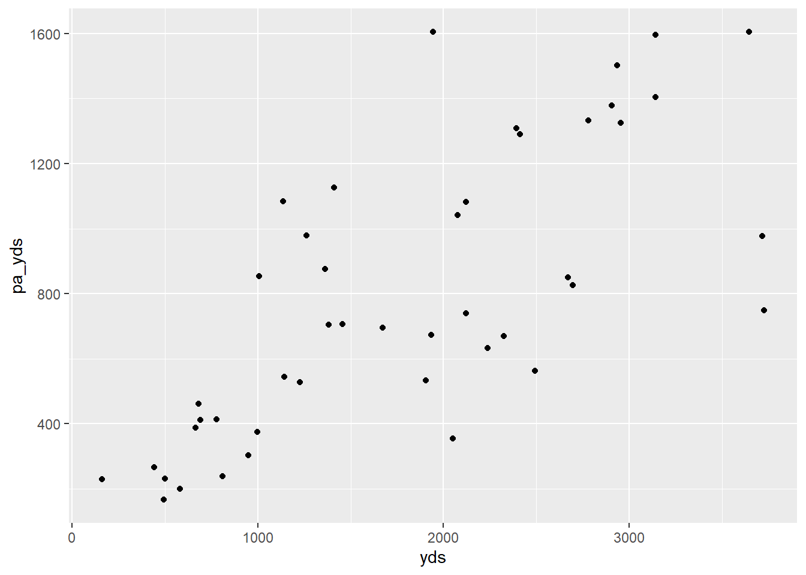
5.4 Building A Data Viz: A Step-by-Step Process
The outputted scatter plot is an excellent starting point for a more finely detailed visualization. While we are able to see the relationship between non-play action passing yards and those attempts that included play action, we are unable to discern which specific point is which quarterback - among other issues. To provide more detail and to “prettify” the plot, let’s discuss doing the following:
Note
Our data visualization “to do list”:
- Adding team colors to each point.
- Increasing the size of each point.
- Adding player names to each point.
- Increasing the number of ticks on each axis.
- Provide the numeric values in correct format (that is, including a
,to correctly show thousands). - Rename the title of each axis.
- Provide a title, subtitle, and caption for the plot.
- Add mean lines to both the x-axis and y-axis
- Change
themeelements to make data viz more appealing.
5.4.1 Adding Team Colors to Each Point
Note
Much like anything in the R language, there are multiple ways to go about add team colors (and logos, player headshots, etc.) to visualizations.
First, we can merge team color information into our play_action_data and then manually set the colors in our geom_point call.
Second, we can conduct the same merge but then use the nflplotRr package (which is part of the nflverse) to bring the colors in.
Both examples will be included in the below example. However, please note that I typically do not use the nflplotR package in scatter plots as, in certain circumstances, adding the colors manually provides the necessary control that nflplotR sometimes cannot provide.
That said, the power of nflplotR is extremely evident when working with team logos and/or player headshots (which will be covered later in this chapter).
To start, we will load team information using the load_teams function within nflreadr. In this case, we are requesting that the package provide only the 32 current NFL teams with by including the current = TRUE argument. Conversely, setting the argument to current = FALSE will result in historical NFL teams being included in the data (the Oakland Raiders and St. Louis Rams, for example, will be included in the data). We will also use the select verb from dplyr to gather just the variables we know we will need (team_abbr, team_nick, team_color, and team_color2.
Important
We are only including the team_abbr variable in this example because we are going to create the plot both with and without the use of nflplotR. As of the writing of this book, the newest development version of the package is 1.1.0.9004 and does not yet (if ever) provide support to use team nicknames. Because of this, we must include team_abbr in our merge since it is the team name version that is standardized for use in nflplotr.
After collecting the team information needed, we can conducted a left_join to match the information by team in play_action_data and team_nick in the team information from load_teams() and then confirm the merge was successful by viewing the columns names in play_action_data with colnames().
teams <- nflreadr::load_teams(current = TRUE) %>%
select(team_abbr, team_nick, team_color, team_color2)
play_action_data <- play_action_data %>%
left_join(teams, by = c("team" = "team_nick"))
colnames(play_action_data)With the team color information now built into our play_action_data, we can incorporate the team color specific to each point by including the color argument within our geom_point.
ggplot(data = play_action_data, aes(x = yds, y = pa_yds)) +
geom_point(color = play_action_data$team_color)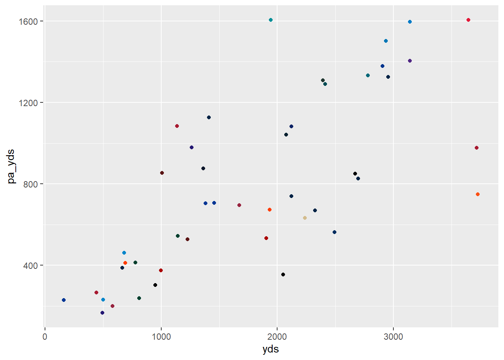
Important
You may notice that we used the the $ special operator to extract the team_color information within our play_action_data data frame. This is an extremely important distinction, as using the aes() argument from ggplot and not using the $ operator will result in a custom scale color being applied to each team, without the correct team colors associating with the correct team.
To see this for yourself, you can run the example following code. Remember, this is an incorrect approach and serves to only highlight why the $ special operator was used in the above code.
ggplot(data = play_action_data, aes(x = yds, y = pa_yds)) +
geom_point(aes(color = team_color))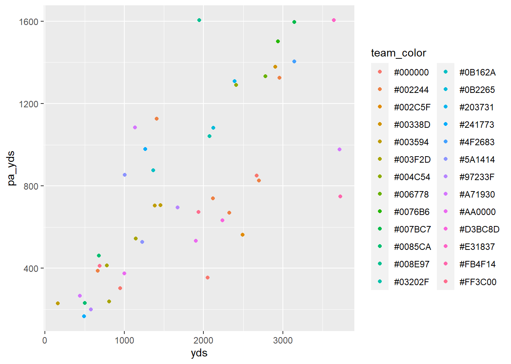
As mentioned, the same result can be achieved using the nflplotR package. The following code will do so:
ggplot(data = play_action_data, aes(x = yds, y = pa_yds)) +
geom_point(aes(color = team_abbr)) +
nflplotR::scale_color_nfl(type = "primary")
In the above example, you will notice that we are including the team color information in an aes() call within the geom_point() function. This is because we ultimately control the specific of the custom scale through the use of scale_color_nfl in the nflplotR package, which also allows us to select whether we want to display the primary or secondary team color.
Given the two examples above, a couple items regarding the use of nflplotR should become apparent.
- If your data already includes team names in
team_abbrformat (that is: BAL, CIN, DET, DAL, etc.), then usingnflplotRis likely a more efficient option as you do not need to merge in team color information. In other words, ourplay_action_datainformation could contain just the variables forplayer,team_abbr,yds, andpa_ydsandnflplotRwould still work as the package, “behind the scenes”, will automatically correlate theteam_abbrwith the correct color for each team. - However, if your data does not include teams in
team_abbrformat and you must merge in information manually, it is likely more efficient to use the$special operator to bring the team colors in without using theaes()call withingeom_point().
Finally, because we have both team_color and team_color2 - the primary and secondary colors for each team - in the data, we can get fancy and create points that are filled with the primary team color and outlined by the secondary team color. Doing so simply requires changing the type of our geom_point. In the below example, we are specifying that we want a specific type of geom_point by using shape = 21 and then providing the fill color and the outline color with color. In each case, we are again using the $ special operator to select the primary and secondary color associated with each team.
ggplot(data = play_action_data, aes(x = yds, y = pa_yds)) +
geom_point(shape = 21,
fill = play_action_data$team_color,
color = play_action_data$team_color2)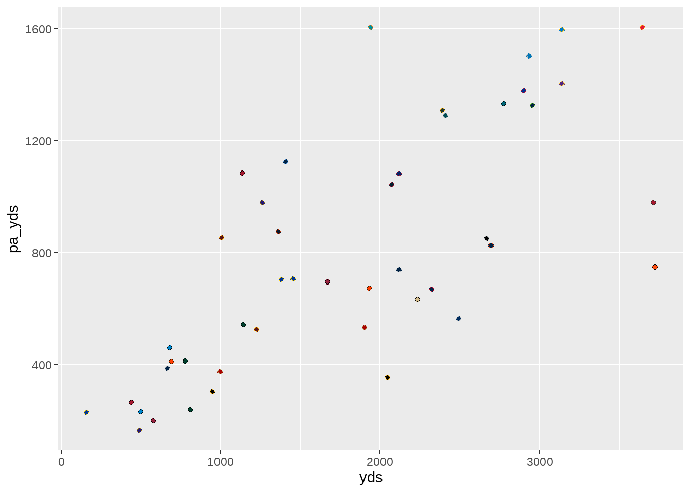
With team colors correctly associated with each point, we can turn back to our “to do list” to see what part of the job is next.
Note
Our data visualization “to do list”:
Adding team colors to each point.Increasing the size of each point.
Adding player names to each point.
Increasing the number of ticks on each axis.
Provide the numeric values in correct format (that is, including a , to correctly show thousands).
Rename the title of each axis.
Provide a title, subtitle, and caption for the plot.
Add mean lines to both the x-axis and y-axis.
Change
themeelements to make data viz more appealing.
5.4.2 Increasing The Size of Each Point
Determining when and how to resize the individual points in a scatterplot is a multifaceted decision. To that end, there is no hard and fast rule for doing so as it depends on both the specific goals and context of the visualization. There are, however, some general guidelines to keep in mind:
- Data density: if you have a lot of data points within your plot, making the points smaller may help to reduce issues of overlapping/overplotting. Not only is this more aesthetically pleasing, but it can also help in making it easier to see patterns.
- Important of individual points: if certain points within the scatterplot are important, we may want to increase the size of those specific points to make them standout.
- Visual aesthetics: the size of the points can be adjusted simply for visual appeal.
- Contextual factors: can the size of the points be used to highlight even more uniqueness in the data? For example, given the right data structure, we can size individual dots to show the spread in total attempts across the quarterbacks.
Given the above guidelines, the resizing of the points in our play_action_data data frame is going to be a strictly aesthetic decision. We cannot, as mentioned above, alter the size of each specific points based on each quarterback’s number of attempts as the data provides attempts for both play action and non-play action passes. Moreover, we could create a new column that add both attempt numbers to get a QB’s cumulative total but that does not have a distinct correlation to the data on either axis.
Danger
For the sake of educational purposes, we can alter the size of each specific point to correlate to the total number of play action attempts for each quarterback (and then divide this by 25 in order to decrease the size of the points to fit them all onto the plot).
Again: it is important to point out that this not a good approach to data visualization, as the size of the dots correlates to just one of the variables being explored in the plot.
ggplot(data = play_action_data, aes(x = yds, y = pa_yds)) +
geom_point(shape = 21,
fill = play_action_data$team_color,
color = play_action_data$team_color2,
size = play_action_data$pa_att / 25)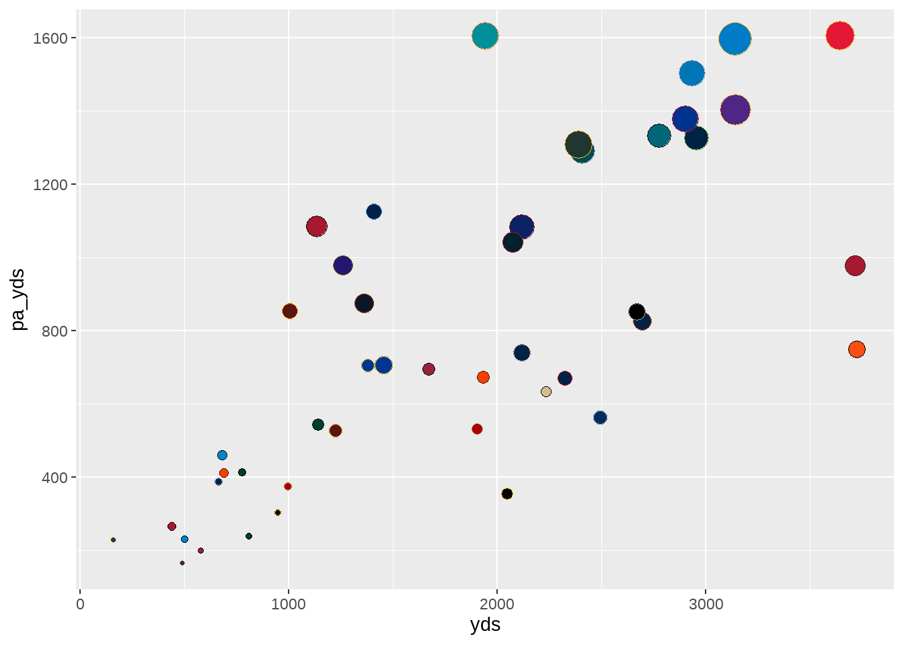
In order to maintain correct visualization standards, we can resize the points for nothing more than aesthetic purposes (that is: making them bigger so they are easier to see). To do so, we still add the size argument to our geom_point but simply provide a numeric value to apply uniformly across all the points. To process of selecting the numeric value is a case of trial and error - inputting and running, changing and running, and changing and running again until you find the size that provides easier to see points without adding overlap into the visualization.
ggplot(data = play_action_data, aes(x = yds, y = pa_yds)) +
geom_point(shape = 21,
fill = play_action_data$team_color,
color = play_action_data$team_color2,
size = 4.5)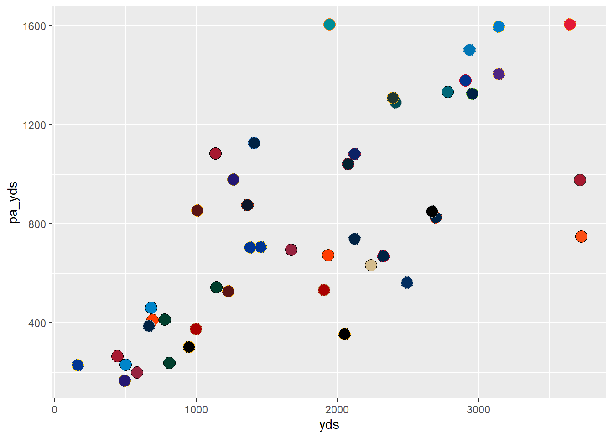
With the size of each point adequately adjusted, we can move on to the next part of our data visualization “to do list.”
Note
Our data visualization “to do list”:
Adding team colors to each point.Increasing the size of each point.Adding player names to each point.
Increasing the number of ticks on each axis.
Provide the numeric values in correct format (that is, including a , to correctly show thousands).
Rename the title of each axis.
Provide a title, subtitle, and caption for the plot.
Add mean lines to both the x-axis and y-axis.
Change
themeelements to make data viz more appealing.
5.4.3 Adding Player Names to Each Point
While the our current plot includes team-specific colors for the points, we are still not able to discern - for the most part - which player belongs to which point. To rectify this, we will turn to using the ggrepel package, which is designed to improve the readability of text labels on plots by automatically repelling overlapping labels, if any. To that end, ggrepel operates out of two main functions: geom_text_repel and geom_label_repel. Both provide the same end result, with the core different being geom_label_repel adding a customized label under each player’s name.
We can do a bare minimum addition of the player names by adding one additional line of code using geom_text_repel and wrapping it in an aes() call and specifying which variable in the play_action_data is the label we would like to display.
ggplot(data = play_action_data, aes(x = yds, y = pa_yds)) +
geom_point(shape = 21,
fill = play_action_data$team_color,
color = play_action_data$team_color2,
size = 4.5) +
geom_text_repel(aes(label = player))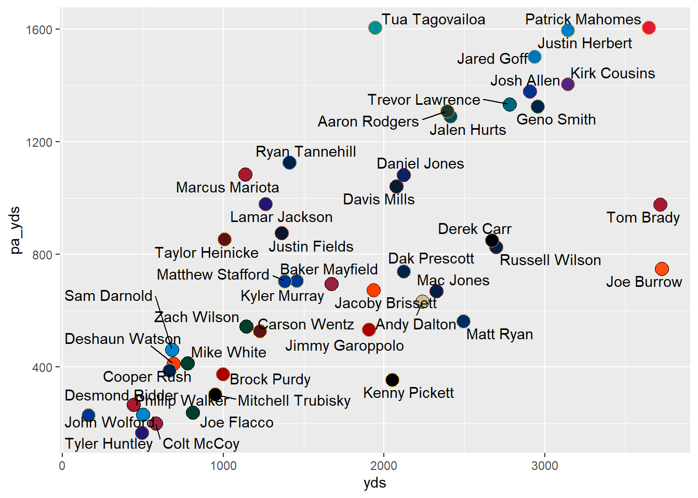
While it is a good first attempt at adding the names, many of them are awkwardly close to the respective point. Luckily, the ggrepel package provides plenty of built-in customization options:
ggrepel Option1
|
Description of Option |
|---|---|
| seed | a random numeric seed number for the purposes of recreating the same layout |
| force | force of repulsion between overlapping text labels |
| force_pull | force of attraction between each text label and its data point |
| direction | move the text labels in either “x” or “y” directions |
| nudge_x | adjust the starting x-axis starting position of the label |
| nudge_y | adjust the starting y-axis starting position of the label |
| box.padding | padding around the text label |
| point.padding | padding around the labeled data point |
| arrow | renders the line segment as an arrow |
Of the above options, the our current issue with name and point spacing can be resolved by including a numeric value to the box.padding. Moreover, we can control the look and style of the text (such as size, font family, font face, etc.) in much the same way. To make these changes, we can set the box.padding to 0.45, set the size of the text to 3 using size as well as switch the font to ‘Roboto Condensed’ using family, and - finally - make it bold using fontface.
ggplot(data = play_action_data, aes(x = yds, y = pa_yds)) +
geom_point(shape = 21,
fill = play_action_data$team_color,
color = play_action_data$team_color2,
size = 4.5) +
geom_text_repel(aes(label = player),
box.padding = 0.45,
size = 3,
family = "Roboto Condensed",
fontface = "bold")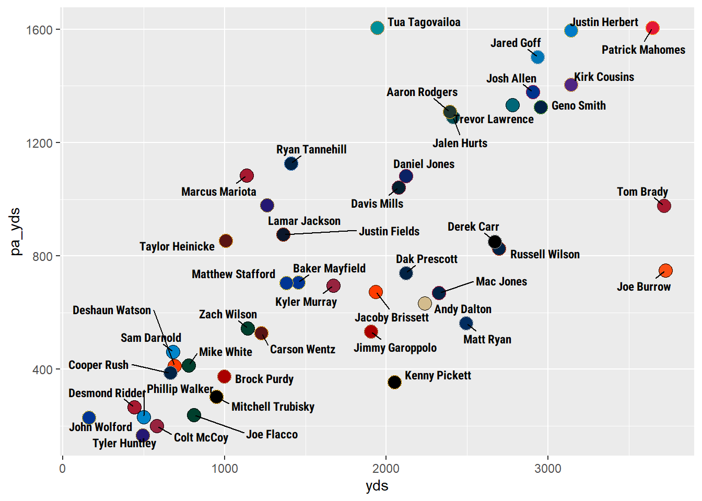
The plot, as is, is understandable in that we are able to associate each point with a specific quarterback to examine how a quarterback’s total passing yardage is split between play action and non-play action passes. While the graph could hypothetically “standalone” as is - minus a need for a title - we can still do work on it to make it more presentable. Let’s return to our data visualization “to do list.”
Note
Our data visualization “to do list”:
Adding team colors to each point.Increasing the size of each point.Adding player names to each point.Increasing the number of ticks on each axis.
Provide the numeric values in correct format (that is, including a , to correctly show thousands).
Rename the title of each axis.
Provide a title, subtitle, and caption for the plot.
Add mean lines to both x-axis and y-axis.
Change
themeelements to make data viz more appealing.
5.4.4 Editing Axis Ticks and Values
Because steps 4 and 5 from the above “to do list” can be accomplished with the same package, we will lump both together and complete them at once.
Let’s first examine the idea of increasing the number of ticks on each axis. The “axis ticks” refer to the specific spots on each axis wherein a numeric data point resides. With our current visualization, we currently have “1000, 2000, 3000” on the x-axis and “400, 800, 1200, 1600” on the y-axis.
We may want to increase the number of axis ticks in this visualization as it can provide a more detailed view of the data being presented. Typically, increasing the number of tickets will show more granularity in the data and make it easier to interpret the values represented by each point. In this specific case, we can look at the cluster of points represented by Andy Dalton, Mac Jones, and Matt Ryan. Given the current structure of the axis ticks, we can guess that Matt Ryan has roughly 2,500 yards on non-play action passing attempts. Given we know Matt Ryan’s amount, we can make guesses that Andy Dalton may be around 2,300 and Mac Jones somewhere between the two.
By increasing the number of values on each axis, we have the ability to see more specific results. Conversely, we must be careful to not add too many so that the data becomes overwhelming to interpret. Much like the size of geom_point was a case of trial and error, so is selecting an appropriate amount of ticks.
However, before implementing these changes, we need to segue into a discussion on continuous and discrete data.
Important
When implementing changes to either the x- or y-axis in ggplot, you will be working with either continuous or discrete data, and using the scale_x_continuous or scale_x_discrete functions (or replacing x with y when working with the opposite axis). In either case, both functions allow you to customize the axis of a plot but are used for different types of data.
scale_x_continuous is used for continuous (or numeric) data, where the axis is represented by a continuous range of numeric values. The values within a continuous axis can take on any number within the given range.
scale_x_discrete is used for discrete data (or often character-based data). You will see this function used when working with variables such as player names, teams, college names, etc. In any case, discrete data is limited to a specific set of categories.
Please know that ggplot will throw an error if you try to apply a continuous scale to discrete data, or the opposite, that reads: Error: Discrete value supplied to continuous scale.
In the case of our current plot, we now know we will be using the scales_x_continuous and scale_y_continuous functions as both contain continuous (numeric) data. To make the changes, we can turn to the scales package and its pretty_breaks function to change the number of “breaks” (or ticks) on each axis. By placing n = 6 within the pretty_breaks argument, we are requesting a total of six axis ticks on both the x- and y-axis.
ggplot(data = play_action_data, aes(x = yds, y = pa_yds)) +
geom_point(shape = 21,
fill = play_action_data$team_color,
color = play_action_data$team_color2,
size = 4.5) +
geom_text_repel(aes(label = player),
box.padding = 0.45,
size = 3,
family = "Roboto Condensed",
fontface = "bold") +
scale_x_continuous(breaks = scales::pretty_breaks(n = 6)) +
scale_y_continuous(breaks = scales::pretty_breaks(n = 6))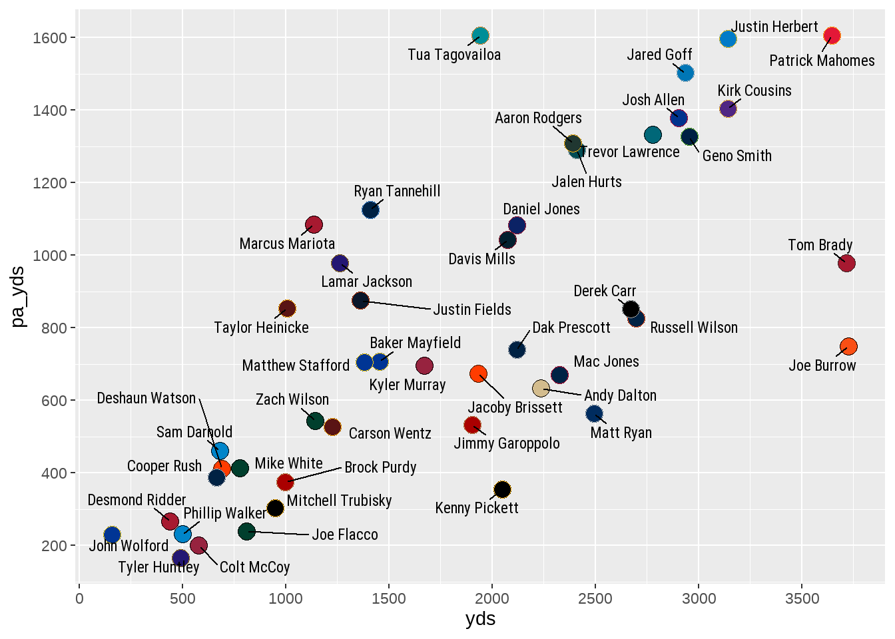
Despite our request to build the plot with six ticks on each axis, you will see the generated visualization includes seven on the x-axis and eight on the y-axis. This does not mean your code with pretty_breaks did not work. Instead, the pretty_breaks function is designed to internally determine the best axis tick optimization based on your requested number. To that end, the function - “under the hood” - determined that seven and eight ticks, respectively, was the most optimized way to display the data given our desire to have at least six on each.
With the number of axis ticks corrected, we can turn our attention to getting the labels of the axis ticks into correct numeric format. Within the same scale_x_continuous or scale_y_continuous arguments, we will use the labels function, combined with another tool from the scales package to make the adjustments.
ggplot(data = play_action_data, aes(x = yds, y = pa_yds)) +
geom_point(shape = 21,
fill = play_action_data$team_color,
color = play_action_data$team_color2,
size = 4.5) +
geom_text_repel(aes(label = player),
box.padding = 0.45,
size = 3,
family = "Roboto Condensed",
fontface = "bold") +
scale_x_continuous(breaks = scales::pretty_breaks(n = 6),
labels = scales::label_comma()) +
scale_y_continuous(breaks = scales::pretty_breaks(n = 6),
labels = scales::label_comma())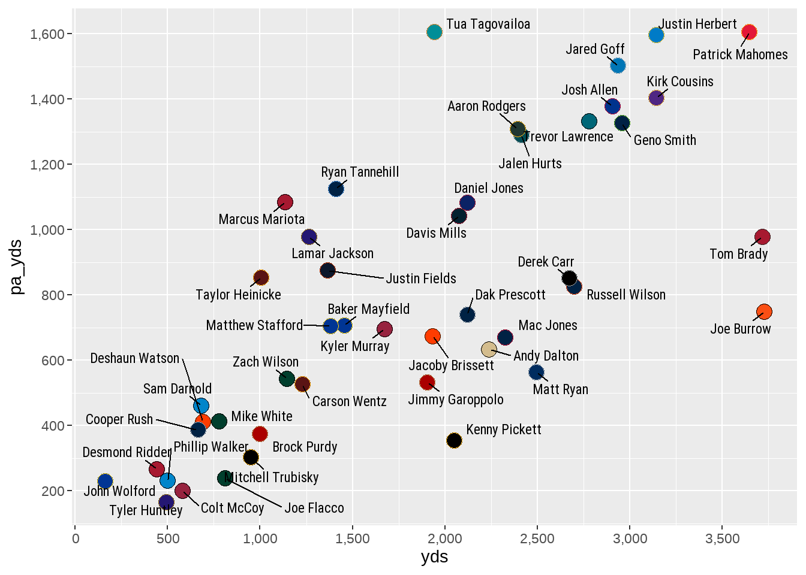
By adding a labels option to both scale_x_continuous and scale_y_continuous, we can use the label_comma() option from within the scales package to easily add a comma into numbers that are in the thousands.
With much of the heavy lifting for our visualization now complete, we can move on to the final steps in our “to do list.”
Note
Our data visualization “to do list”:
Adding team colors to each point.Increasing the size of each point.Adding player names to each point.Increasing the number of ticks on each axis.Provide the numeric values in correct format (that is, including a , to correctly show thousands).Rename the title of each axis.
Provide a title, subtitle, and caption for the plot.
Add mean lines to both x-axis and y-axis.
Change
themeelements to make data viz more appealing.
5.4.5 Changing Axis Titles and Adding Title, Subtitle, and Caption
Much like our last section, we can work on changing the title of each axis and adding a title, subtitle, and caption for the plot within one section, as all this is added and/or changed by using labs().
ggplot(data = play_action_data, aes(x = yds, y = pa_yds)) +
geom_point(shape = 21,
fill = play_action_data$team_color,
color = play_action_data$team_color2,
size = 4.5) +
geom_text_repel(aes(label = player),
box.padding = 0.45,
size = 3,
family = "Roboto Condensed",
fontface = "bold") +
scale_x_continuous(breaks = scales::pretty_breaks(n = 6),
labels = scales::label_comma()) +
scale_y_continuous(breaks = scales::pretty_breaks(n = 6),
labels = scales::label_comma()) +
labs(x = "Non-Play Action Yards",
y = "Play Action Yards",
title = "**Cumulative Passing Yards**",
subtitle = "*Non-Play Action vs. Play Action*",
caption = "*An Introduction to NFL Analytics with R*<br>**Brad J. Congelio**")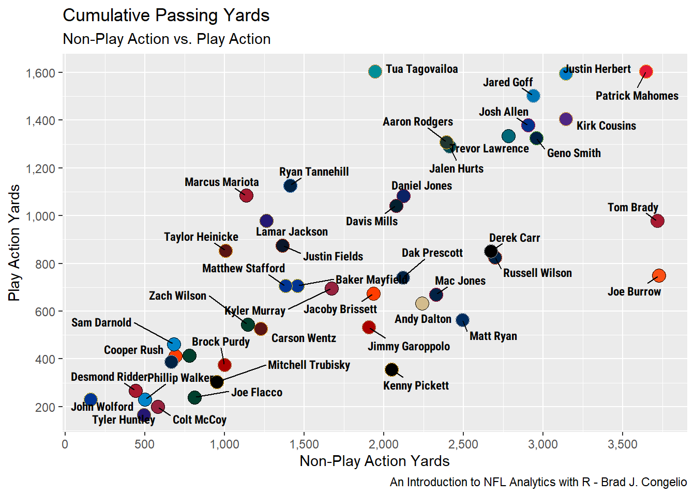
Within the new labs(), we are placing a total of five items: x (allowing us to name the x-axis outside the confines of what it is called in the beginning aes() call, y (allowing us to name the y-axis), title (allowing us to add a title to the top of the plot), subtitle (allowing us to add a subtitle below the title and provide more contextual information), and caption (allowing us to provide information about where the graph come from and who designed it). We will explore ways to change the font, size, color, and more of these items when we move on to the last item of our “to do list.”
Note
Our data visualization “to do list”:
Adding team colors to each point.Increasing the size of each point.Adding player names to each point.Increasing the number of ticks on each axis.Provide the numeric values in correct format (that is, including a , to correctly show thousands).Rename the title of each axis.Provide a title, subtitle, and caption for the plot.Add mean lines to both x-axis and y-axis.
Change theme elements to make data viz more appealing.
5.4.6 Adding Mean Lines to Both x-axis and y-axis
Adding mean (or average) lines to both the x-axis and y-axis allows us to visualize where each quarterback falls within one of four sections (according to the amount of passing yards in both situations). Adding the lines is done by add two additional geoms to the existing plot (in this case geom_hline and geom_vline).
ggplot(data = play_action_data, aes(x = yds, y = pa_yds)) +
geom_point(shape = 21,
fill = play_action_data$team_color,
color = play_action_data$team_color2,
size = 4.5) +
geom_text_repel(aes(label = player),
box.padding = 0.45,
size = 3,
family = "Roboto Condensed",
fontface = "bold") +
scale_x_continuous(breaks = scales::pretty_breaks(n = 6),
labels = scales::label_comma()) +
scale_y_continuous(breaks = scales::pretty_breaks(n = 6),
labels = scales::label_comma()) +
labs(x = "Non-Play Action Yards",
y = "Play Action Yards",
title = "**Cumulative Passing Yards**",
subtitle = "*Non-Play Action vs. Play Action*",
caption = "*An Introduction to NFL Analytics with R*<br>**Brad J. Congelio**") +
geom_hline(yintercept = mean(play_action_data$pa_yds), linewidth = .8, color = "black", linetype = "dashed") +
geom_vline(xintercept = mean(play_action_data$yds), linewidth = .8, color = "black", linetype = "dashed")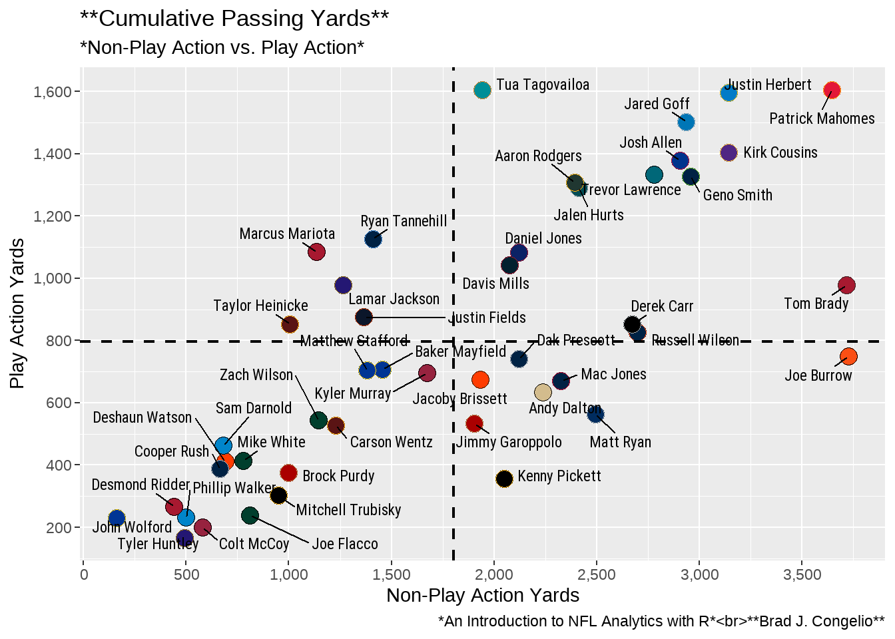
In the above output, we used geom_hline and geom_vline to draw a dashed line at the average for both pa_yds at the yintercept and yds at the xintercept. Because of this, we can see that - for example - Marcus Mariota is above average for play action yards, but below average for non-play action yards. Additionally, Matthew Stafford, Baker Mayfield, Kyler Murray, and many others are all below average in both metrics while Jared Goff, Justin Herbert, Patrick Mahomes, and others are well above average in both.
However, adding the geom_hline and geom_vline at the very end of the ggplot code creates an issues (and one I’ve intentionally created for the purposes of education). As you look at the plot, you will see that the dashed line runs on top of the names and dots in the plot. This is because ggplot follows a very specific ordering of layering.
Important
In ggplot, it is important to remember that items in a plot are layered in the order in which they are added to the plot. This process of layering is important because it ultimately determines which items end up on top of others, which can have significant implications on the visual appearance of the plot.
As we’ve seen so far in the process, each layer of a plot is added by including a geom_. The first layer added will always be at the very bottom of the plot, with each additional layer building on top of the previous layers.
Because of the important layering issue highlighted above, it is visually necessary for us to move the geom_hline and geom_vline to the beginning of the ggplot code so both are layered underneath everything else in the plot (geom_point and geom_text_repel in this case). As well, we can apply the alpha option to each to slightly decrease each line’s transparency.
ggplot(data = play_action_data, aes(x = yds, y = pa_yds)) +
geom_hline(yintercept = mean(play_action_data$pa_yds),
linewidth = .8,
color = "black",
linetype = "dashed",
alpha = 0.5) +
geom_vline(xintercept = mean(play_action_data$yds),
linewidth = .8,
color = "black",
linetype = "dashed",
alpha = 0.5) +
geom_point(shape = 21,
fill = play_action_data$team_color,
color = play_action_data$team_color2,
size = 4.5) +
geom_text_repel(aes(label = player),
box.padding = 0.45,
size = 3,
family = "Roboto Condensed",
fontface = "bold") +
scale_x_continuous(breaks = scales::pretty_breaks(n = 6),
labels = scales::label_comma()) +
scale_y_continuous(breaks = scales::pretty_breaks(n = 6),
labels = scales::label_comma()) +
labs(x = "Non-Play Action Yards",
y = "Play Action Yards",
title = "**Cumulative Passing Yards**",
subtitle = "*Non-Play Action vs. Play Action*",
caption = "*An Introduction to NFL Analytics with R*<br>**Brad J. Congelio**")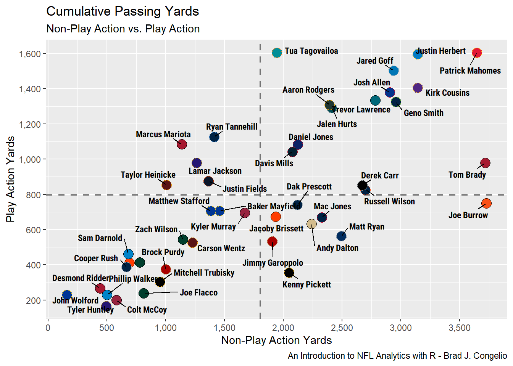
By moving the average lines to the top of our ggplot code, both are now layered under the other two geom_ and are not visually impacting the final plot.
5.4.6.1 Adding Mean Lines with nflplotR
Tip
Even though we were not able to use nflplotR to handle the colors in this plot because the data lacked a corresponding team_abbr variable, we can still use nflplotR to add our mean lines - and I actually recommend doing so, as it requires less lines of code (and less typing). See below for an example.
ggplot(data = play_action_data, aes(x = yds, y = pa_yds)) +
geom_mean_lines(aes(v_var = yds, h_var = pa_yds),
size = 0.8,
color = "black",
linetype = "dashed",
alpha = 0.5) +
geom_point(shape = 21,
fill = play_action_data$team_color,
color = play_action_data$team_color2,
size = 4.5) +
geom_text_repel(aes(label = player),
box.padding = 0.45,
size = 3,
family = "Roboto Condensed",
fontface = "bold") +
scale_x_continuous(breaks = scales::pretty_breaks(n = 6),
labels = scales::label_comma()) +
scale_y_continuous(breaks = scales::pretty_breaks(n = 6),
labels = scales::label_comma()) +
labs(x = "Non-Play Action Yards",
y = "Play Action Yards",
title = "**Cumulative Passing Yards**",
subtitle = "*Non-Play Action vs. Play Action*",
caption = "*An Introduction to NFL Analytics with R*<br>**Brad J. Congelio**")
By using the geom_mean_lines() function within nflplotR, we can construct both of the lines together rather than needing to provide a geom_hline() and a geom_vline() argument. Because of this, we can also provide the size, width, and type of our line just once (rather than repeating it again like we had to in the former method).
We can now move onto the final item on our data visualization “to do list.”
Note
Our data visualization “to do list”:
Adding team colors to each point.Increasing the size of each point.Adding player names to each point.Increasing the number of ticks on each axis.Provide the numeric values in correct format (that is, including a , to correctly show thousands).Rename the title of each axis.Provide a title, subtitle, and caption for the plot.Add mean lines to both x-axis and y-axis.Change theme elements to make data viz more appealing.
5.4.7 Making Changes to Theme Elements
There is a laundry list of options to be explored when it comes to editing your plot’s theme elements to make it look exactly as you want. Currently, according to the ggplot2 website, the following is a comprehensive list of elements that you can tinker with.
line,
rect,
text,
title,
aspect.ratio,
axis.title,
axis.title.x,
axis.title.x.top,
axis.title.x.bottom,
axis.title.y,
axis.title.y.left,
axis.title.y.right,
axis.text,
axis.text.x,
axis.text.x.top,
axis.text.x.bottom,
axis.text.y,
axis.text.y.left,
axis.text.y.right,
axis.ticks,
axis.ticks.x,
axis.ticks.x.top,
axis.ticks.x.bottom,
axis.ticks.y,
axis.ticks.y.left,
axis.ticks.y.right,
axis.ticks.length,
axis.ticks.length.x,
axis.ticks.length.x.top,
axis.ticks.length.x.bottom,
axis.ticks.length.y,
axis.ticks.length.y.left,
axis.ticks.length.y.right,
axis.line,
axis.line.x,
axis.line.x.top,
axis.line.x.bottom,
axis.line.y,
axis.line.y.left,
axis.line.y.right,
legend.background,
legend.margin,
legend.spacing,
legend.spacing.x,
legend.spacing.y,
legend.key,
legend.key.size,
legend.key.height,
legend.key.width,
legend.text,
legend.text.align,
legend.title,
legend.title.align,
legend.position,
legend.direction,
legend.justification,
legend.box,
legend.box.just,
legend.box.margin,
legend.box.background,
legend.box.spacing,
panel.background,
panel.border,
panel.spacing,
panel.spacing.x,
panel.spacing.y,
panel.grid,
panel.grid.major,
panel.grid.minor,
panel.grid.major.x,
panel.grid.major.y,
panel.grid.minor.x,
panel.grid.minor.y,
panel.ontop,
plot.background,
plot.title,
plot.title.position,
plot.subtitle,
plot.caption,
plot.caption.position,
plot.tag,
plot.tag.position,
plot.margin,
strip.background,
strip.background.x,
strip.background.y,
strip.clip,
strip.placement,
strip.text,
strip.text.x,
strip.text.x.bottom,
strip.text.x.top,
strip.text.y,
strip.text.y.left,
strip.text.y.right,
strip.switch.pad.grid,
strip.switch.pad.wrapIt’s not likely that we will encounter all these theme elements in this book. But, the ones we do use, we will use heavily. For example, I prefer to design all of my data visualizations without the “axis ticks” (those small lines sticking out from the plot just above, or beside, each yardage number).
Tip
Please note the keywords in the above paragraph: “I prefer.”
Nearly all the work you conduct within the theme() of your data visualizations are just that - your preference. I very much have a “personal preference” that unites all the data viz work that I do and share for public consumption.
You can feel free to follow along with my preferences, including the use of the upcoming nfl_analytics_theme() I will provide, or to make slight (or major!) adjustments to everything we cover in the coming section to make it fit your artistic vision.
Be creative and do not be afraid to experiment with all the options available to you in theme().
Let’s start by removing the ticks on both the x- and y-axis. To do so, we will add the theme() argument at the end of your prior ggplot code and then start building out each and every change we want to make from the above list of options.
ggplot(data = play_action_data, aes(x = yds, y = pa_yds)) +
geom_mean_lines(aes(v_var = yds, h_var = pa_yds),
size = 0.8,
color = "black",
linetype = "dashed",
alpha = 0.5) +
geom_point(shape = 21,
fill = play_action_data$team_color,
color = play_action_data$team_color2,
size = 4.5) +
geom_text_repel(aes(label = player),
box.padding = 0.45,
size = 3,
family = "Roboto Condensed",
fontface = "bold") +
scale_x_continuous(breaks = scales::pretty_breaks(n = 6),
labels = scales::label_comma()) +
scale_y_continuous(breaks = scales::pretty_breaks(n = 6),
labels = scales::label_comma()) +
labs(x = "Non-Play Action Yards",
y = "Play Action Yards",
title = "**Cumulative Passing Yards**",
subtitle = "*Non-Play Action vs. Play Action*",
caption = "*An Introduction to NFL Analytics with R*<br>**Brad J. Congelio**") +
theme(
axis.ticks = element_blank())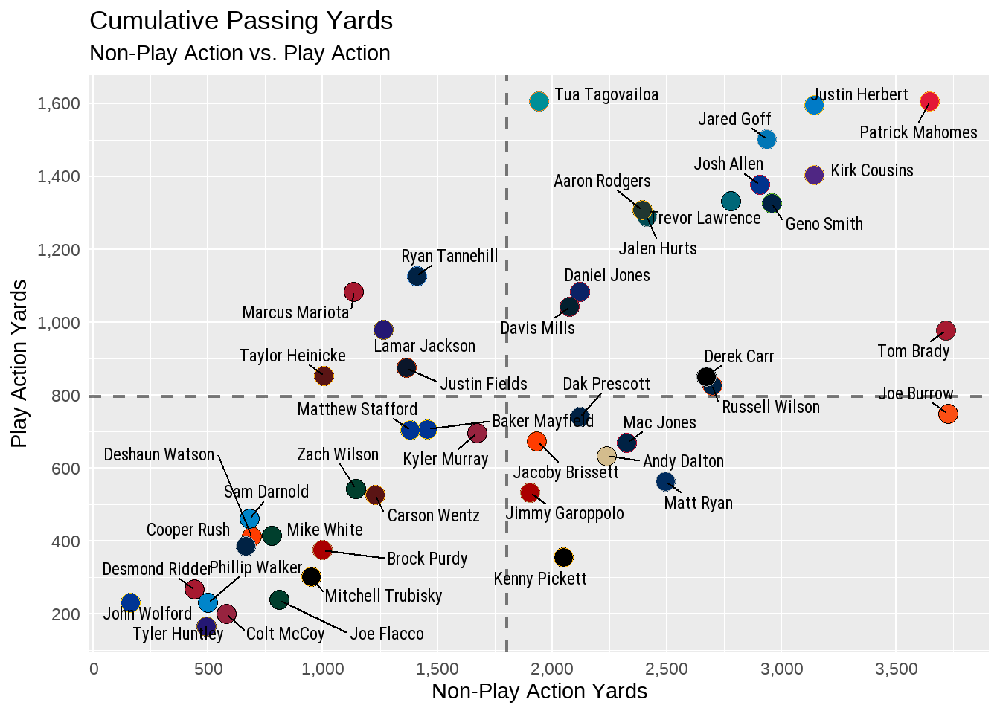
Within the theme() argument, as mentioned, we simply take the specific element we wish to change (from the above list of possibilities from the ggplot2 website) and then provide the instruction on what to do. In this case, since we wish to completely remove the axis.ticks from the entire plot, we can provide element_blank() which removes them. We can continue making changes to the plot’s elements by adding all of these preferences to out theme().
ggplot(data = play_action_data, aes(x = yds, y = pa_yds)) +
geom_mean_lines(aes(v_var = yds, h_var = pa_yds),
size = 0.8,
color = "black",
linetype = "dashed",
alpha = 0.5) +
geom_point(shape = 21,
fill = play_action_data$team_color,
color = play_action_data$team_color2,
size = 4.5) +
geom_text_repel(aes(label = player),
box.padding = 0.45,
size = 3,
family = "Roboto Condensed",
fontface = "bold") +
scale_x_continuous(breaks = scales::pretty_breaks(n = 6),
labels = scales::label_comma()) +
scale_y_continuous(breaks = scales::pretty_breaks(n = 6),
labels = scales::label_comma()) +
labs(x = "Non-Play Action Yards",
y = "Play Action Yards",
title = "**Cumulative Passing Yards**",
subtitle = "*Non-Play Action vs. Play Action*",
caption = "*An Introduction to NFL Analytics with R*<br>**Brad J. Congelio**") +
theme(
axis.ticks = element_blank(),
axis.title = element_text(family = "Roboto Condensed",
size = 10,
color = "black"),
axis.text = element_text(family = "Roboto Condensed",
face = "bold",
size = 10,
color = "black"),
plot.title.position = "plot",
plot.title = element_text(family = "Roboto Condensed",
size = 16,
face = "bold",
color = "#E31837",
vjust = .02,
hjust = 0.5),
plot.subtitle = element_text(family = "Roboto Condensed",
size = 12,
color = "black",
hjust = 0.5),
plot.caption = element_text(family = "Roboto Condensed",
size = 8,
face = "italic",
color = "black"),
panel.grid.minor = element_blank(),
panel.grid.major = element_line(color = "#d0d0d0"),
panel.background = element_rect(fill = "#f7f7f7"),
plot.background = element_rect(fill = "#f7f7f7"),
panel.border = element_blank())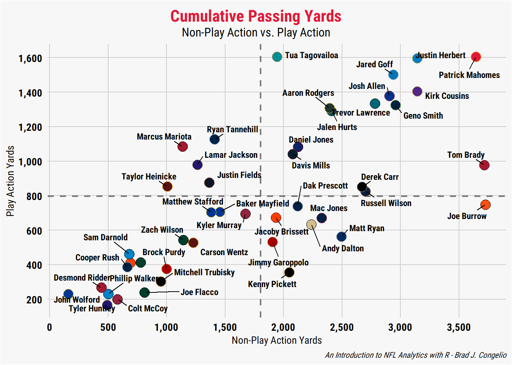
There is a lot going on now in our theme() argument. Importantly, you may notice that we used element_blank() to remove the axis tick marks, but then switched to using element_text() for the reminder of the edits with our theme(). Both are one of four theme elements that can be modified in the above fashion.
Tip
The Four Theme Elements You Can Edit
When working on editing your plot to your liking, you can make changes to one of four theme elements:
-
element_blank()- this used to entirely remove an element from the plot like we did withaxis.ticks. -
element_rect()- this is used to make changes to the borders and backgrounds of a plot. -
element_lines()- this is used to make changes to any element in the plot that is a line. -
element_text()- this is used to make change to any element in the plot that is text.
We first made changes to the text of the title associated with the x- and y-axis and made edits to the text of the numeric values for each yardage distance. This process is started by using axis.title and axis.text in conjunction with element_text(), since that is the specific element type we are wishing to edit. Within our element_text(), we provided the numerous argument on how we wished to edit the text of both by providing the family (or the font), the face, the size, and the color.
After, we got a little fancy in our edits to our plots title and subtitle. I knew that I wanted to center both directly in the middle of the plot. Rather than figuring out the specific horizontal adjustment needed, I used the plot.title.position() argument and set it to "plot", which used the entire width of our plot as the reference point for where to center the plot title and subtitle.
To take advantage of this, we followed by using the plot.title() argument to set the title’s horizontal adjustment to 0.5 (hjust = 0.5). As you may guess, the inclusion of 0.5 instructs the output to center the title (and the subtitle in the ensuing edit) directly over the middle of the plot (as calculated through our prior use of plot.title.position().
Our next significant changes occurred by changing the aesthetics of the plot’s grid lines, background, and border. Because we are working with either line or background elements, we switch from element_text() and begin to use either element_line() or element_rect() (as well as again using element_blank() to completely remove the panel’s minor grid lines).
Tip
In a plot, which are the minor grid lines and which are the major?
In a ggplot2 plot, minor grid lines are those lines that hit either the x- or y-axis between the continuous or discrete values. Conversely, major grid lines are the lines that hit the axis at the same spot as the data values.
In the case of the current plot, our major grid lines are those that hit the x-axis at 500, 1,000, 1,500, and so on and hit the y-axis at 400, 600, 800, etc. The minor grid lines met the axis between the major grid lines.
After removing the panel’s minor grid lines (again, a personal preference of mine), we also change the color of the panel’s major grid lines, then change the color of the plot’s background (both using element_rect()). The end result is a aesthetically pleasing data visualization.
5.5 Creating Your Own ggplot2 Theme
As mentioned, I have a distinctive “brand and look” for the data visualizations I create that make use of the same design elements and choices. Rather than copy and paste those into each and every ggplot piece of code I write, I’ve opted to consolidate all the theme() element changes into my own nfl_analytics_theme() function. In much the same way, I’ve created a “quick and easy” theme for use in this book. To get started, running the following chunk of code will create a function titled nfl_analytics_theme and place it into your RStudio environment.
nfl_analytics_theme <- function(..., base_size = 12) {
theme(
text = element_text(family = "Roboto Condensed", size = base_size),
axis.ticks = element_blank(),
axis.title = element_text(color = "black",
face = "bold"),
axis.text = element_text(color = "black",
face = "bold"),
plot.title.position = "plot",
plot.title = element_text(size = 16,
face = "bold",
color = "black",
vjust = .02,
hjust = 0.5),
plot.subtitle = element_text(color = "black",
hjust = 0.5),
plot.caption = element_text(size = 8,
face = "italic",
color = "black"),
panel.grid.minor = element_blank(),
panel.grid.major = element_line(color = "#d0d0d0"),
panel.background = element_rect(fill = "#f7f7f7"),
plot.background = element_rect(fill = "#f7f7f7"),
panel.border = element_blank())
}You may notice that the elements in the above theme creation are quite similar to the ones we passed into our previous plot. And that is true, and the results will be nearly 99.9% identical. After wrapping our theme() inside a function, indicated by the opening and closing curly brackets { }, we can provide our desired theme element appearances as we would within a regular ggplot2 code block.
However, in the above theme function, we have streamlined the basis a bit by indicating a base_size of all the text, when means all text output will be in size 12 font unless specifically indicated in the element (for example, we have the plot.title set to have a size of 16). As well, the same process was done for font (Roboto Condensed) so there was not a need to type it repeatedly into every element.
Based on the above example, you are free to create as detailed a theme function as you desire. The beauty of creating your own theme like above is you will no longer need to edit each portion of the every plot element. Rather, you can simply call in your theme after you run it and it resides in under the “Functions” in your RStudio environment.
ggplot(data = play_action_data, aes(x = yds, y = pa_yds)) +
geom_mean_lines(aes(v_var = yds, h_var = pa_yds),
size = 0.8,
color = "black",
linetype = "dashed",
alpha = 0.5) +
geom_point(shape = 21,
fill = play_action_data$team_color,
color = play_action_data$team_color2,
size = 4.5) +
geom_text_repel(aes(label = player),
box.padding = 0.45,
size = 3,
family = "Roboto Condensed",
fontface = "bold") +
scale_x_continuous(breaks = scales::pretty_breaks(n = 6),
labels = scales::label_comma()) +
scale_y_continuous(breaks = scales::pretty_breaks(n = 6),
labels = scales::label_comma()) +
labs(x = "Non-Play Action Yards",
y = "Play Action Yards",
title = "**Cumulative Passing Yards**",
subtitle = "*Non-Play Action vs. Play Action*",
caption = "*An Introduction to NFL Analytics with R*<br>**Brad J. Congelio**") +
nfl_analytics_theme()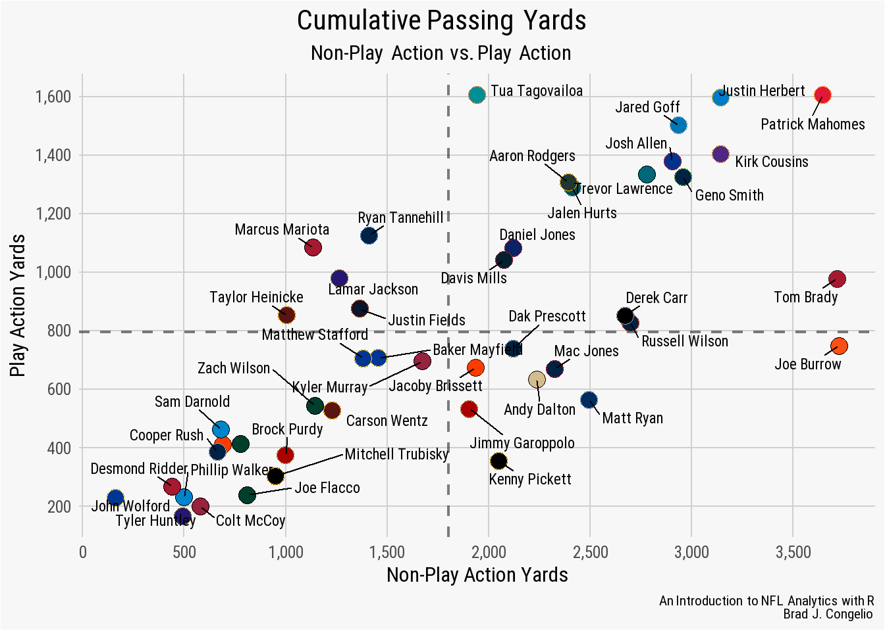
As you can see, we just consolidated 28 lines of code into a single line of code by wrapping all our theme elements into an easy to construct function.
Unfortunately, you will notice that the resulting plot does not output with the title (“Cumulative Passing Yards”) in Kansas City red like in our original. This is because, in our nfl_analytics_theme() function, the color for axis.title() is set to "black". Thankfully, we can make this small edit within our ggplot code to switch the title back to Kansas City red, highlighting the idea that - despite the theme being built into a function - we still have the ability to make necessary edits on the fly without including all 28 lines of code. With the nfl_analytics_theme() active, we can still add additional theme elements as needed to make modifications, as seen below.
ggplot(data = play_action_data, aes(x = yds, y = pa_yds)) +
geom_mean_lines(aes(v_var = yds, h_var = pa_yds),
size = 0.8,
color = "black",
linetype = "dashed",
alpha = 0.5) +
geom_point(shape = 21,
fill = play_action_data$team_color,
color = play_action_data$team_color2,
size = 4.5) +
geom_text_repel(aes(label = player),
box.padding = 0.45,
size = 3,
family = "Roboto Condensed",
fontface = "bold") +
scale_x_continuous(breaks = scales::pretty_breaks(n = 6),
labels = scales::label_comma()) +
scale_y_continuous(breaks = scales::pretty_breaks(n = 6),
labels = scales::label_comma()) +
labs(x = "Non-Play Action Yards",
y = "Play Action Yards",
title = "**Cumulative Passing Yards**",
subtitle = "*Non-Play Action vs. Play Action*",
caption = "*An Introduction to NFL Analytics with R*<br>**Brad J. Congelio**") +
nfl_analytics_theme() +
theme(plot.title = element_markdown(color = "#E31837"))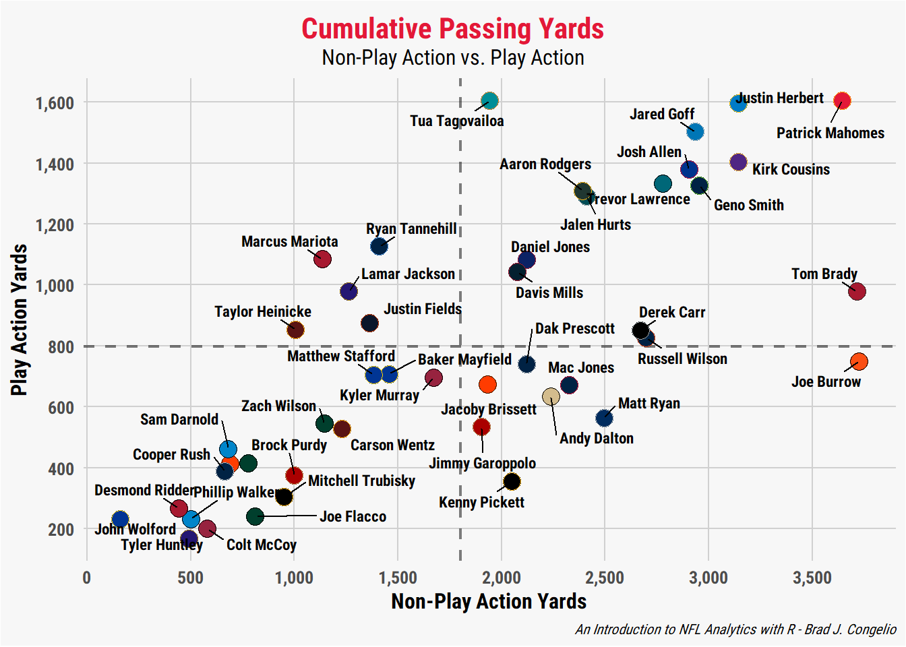
5.6 Using Team Logos in Plots
To explore the process of placing team logos into a plot, let’s stick with our previous example of working with play action passing data but explore it at the team level rather than individual quarterbacks. To gather the data, we can use vroom to read it in from the book’s GitHub.
team_playaction <- vroom::vroom("https://raw.githubusercontent.com/bcongelio/nfl-analytics-with-r-book/origin/example_data/csv/team_playaction.csv")
team_playactionThe resulting team_playaction data contains nearly identical information to the previous QB-level data. However, there is a slight change in how Sports Info Solutions charts passing yards on the team level. You will notice a column for both net_yds and gross_yds. When charting passing attempts in football, a player’s individual passing yards are aggregated under gross yards with all lost yardage resulting from a sack being included. On the other hand, team passing yards are always presented in net yards and any lost yardage from sacks are not included. Case in point, the gross_yds number in our team_playaction data is greater than the net_yds for all 32 NFL teams. In any case, we will build our data visualization using net_yds.
In order to include team logos in the plot, we must first merge in team logo information (again with the understanding that we could use nflplotR if team abbreviations were included in the data). We can collect the team logo information using the load_teams() function within nflreadR. There are three different variations of each team’s logo available in the resulting data: (1.) the logo from ESPN, (2.) the logo from Wikipedia, (3.) a pre-edited version of the logo that is cropped into a square.
Note
There are slight differences in disk space, pixels, and utility in the provided ESPN, Wikipedia, and squared versions of the logos.
The Wikipedia versions are, generally, smaller in size. The Arizona Cardinals logo, for example, is just 9.11 KB in size from Wikipedia while the ESPN version of the logo is 20.6 KB. This difference is disk size is the result of each images dimensions and pixels. The ESPN version, with the larger disk size, is also a higher quality image that is scaled in 500x500 dimensions (and 500 pixels). The Wikipedia version is scaled in 179x161 dimensions at 179 pixels and 161 pixels, respectively. The squared version of the logo is a 200x200 image at 200 pixels with a background matching the team’s primary color.
What does this mean? The ESPN version of the logo is better for those applications where the logo will be large and you do not want any loss of quality. The Wikipedia version, conversely, is better suited for applications like our: for use in a small-scale data visualization. We do not plan on “blowing up” the image, thus losing quality and the smaller disk space size of the images allows for a slightly quicker rendering time when we use the ggimage package. While sparingly used, the squared version of the logo can be used in certain data visualization applications that requires the team logo to quickly and easily “merge” into the background of the plot (more on this later in this chapter, though).
Because of the above explanation, we can collect just the team nicknames and the Wikipedia version of the logo to merge into our existing team_playaction data.
teams <- nflreadr::load_teams(current = TRUE) %>%
select(team_nick, team_logo_wikipedia)
team_playaction <- team_playaction %>%
left_join(teams, by = c("team" = "team_nick"))
team_playactionWith the data now containing the correct information, we can build a basic version of our data visualization using the same geom_point as above, and continue to configure the information on both the x- and y-axis, to verify that everything is working correctly before switching out geom_point for geom_image in order to bring the team logos into the plot.
ggplot(data = team_playaction, aes(x = net_yds, y = pa_net_yds)) +
geom_hline(yintercept = mean(team_playaction$pa_net_yds),
linewidth = 0.8,
color = "black",
linetype = "dashed") +
geom_vline(xintercept = mean(team_playaction$net_yds),
linewidth = 0.8,
color = "black",
linetype = "dashed") +
geom_point() +
scale_x_continuous(breaks = scales::pretty_breaks(n = 6),
labels = scales::label_comma()) +
scale_y_continuous(breaks = scales::pretty_breaks(n = 6),
labels = scales::label_comma()) +
labs(title = "**Net Passing Yards Without Play Action vs. With Play Action**",
subtitle = "*2022 NFL Regular Season*",
caption = "*An Introduction to NFL Analytics with R*<br>**Brad J. Congelio**",
x = "Net Yards Without Play Action",
y = "Net Yards With Play Action") +
nfl_analytics_theme()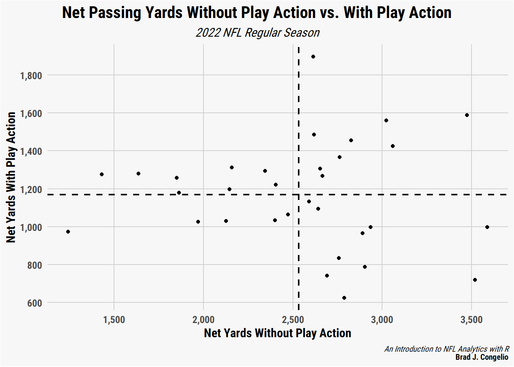
The resulting plot, constructed in nearly an identical manner to our above example, looks correct and we are ready to swap out geom_point for team logos.
Important
Before proceeding with this next step, be sure that you have the ggimage package installed and loaded.
ggplot(data = team_playaction, aes(x = net_yds, y = pa_net_yds)) +
geom_hline(yintercept = mean(team_playaction$pa_net_yds),
linewidth = 0.8,
color = "black",
linetype = "dashed") +
geom_vline(xintercept = mean(team_playaction$net_yds),
linewidth = 0.8,
color = "black",
linetype = "dashed") +
geom_image(aes(image = team_logo_wikipedia)) +
scale_x_continuous(breaks = scales::pretty_breaks(n = 6),
labels = scales::label_comma()) +
scale_y_continuous(breaks = scales::pretty_breaks(n = 6),
labels = scales::label_comma()) +
labs(title = "**Net Passing Yards Without Play Action vs. With Play Action**",
subtitle = "*2022 NFL Regular Season*",
caption = "*An Introduction to NFL Analytics with R*<br>**Brad J. Congelio**",
x = "Net Yards Without Play Action",
y = "Net Yards With Play Action") +
nfl_analytics_theme()
By using the geom_image function, we are able to wrap the image argument within an aesthetics call (that is, aes()) and then stipulate that the team_logo_wikipedia variable is to serve as the image associated with each data point.
But, wait: the image looks horrible, right? Indeed, the logos are pixelated, are skewed in shape, and are just generally unpleasant to look at.
That is because we failed to provide an aspect ratio for the team logos. In this case, we need to add asp = 16/9.
Note
Why are we including a specific aspect ratio of 16/9 for each team logo? Good question.
An aspect ratio of 16/9 refers to the proportional relationship between the width and height of a rectangular display or image. In this case, the width of the image is 16 units, and the height is 9 units. Importantly, this aspect ratio is commonly used for widescreen displays, including most (if not all) modern televisions, computer monitors, and smartphones.
As well, the 16/9 aspect ratio is sometimes referred to as 1.78:1, which means that the width is 1.78 times the height of the image. This aspect ratio is wider than the traditional 4:3 aspect ratio that was common used in older television and CRT-based computer monitors.
We can make the quick adjustment in our prior code to provide the correct aspect ratio for each of our team logos:
ggplot(data = team_playaction, aes(x = net_yds, y = pa_net_yds)) +
geom_hline(yintercept = mean(team_playaction$pa_net_yds),
linewidth = 0.8,
color = "black",
linetype = "dashed") +
geom_vline(xintercept = mean(team_playaction$net_yds),
linewidth = 0.8,
color = "black",
linetype = "dashed") +
geom_image(aes(image = team_logo_wikipedia), asp = 16/9) +
scale_x_continuous(breaks = scales::pretty_breaks(n = 6),
labels = scales::label_comma()) +
scale_y_continuous(breaks = scales::pretty_breaks(n = 6),
labels = scales::label_comma()) +
labs(title = "**Net Passing Yards Without Play Action vs. With Play Action**",
subtitle = "*2022 NFL Regular Season*",
caption = "*An Introduction to NFL Analytics with R*<br>**Brad J. Congelio**",
x = "Net Yards Without Play Action",
y = "Net Yards With Play Action") +
nfl_analytics_theme()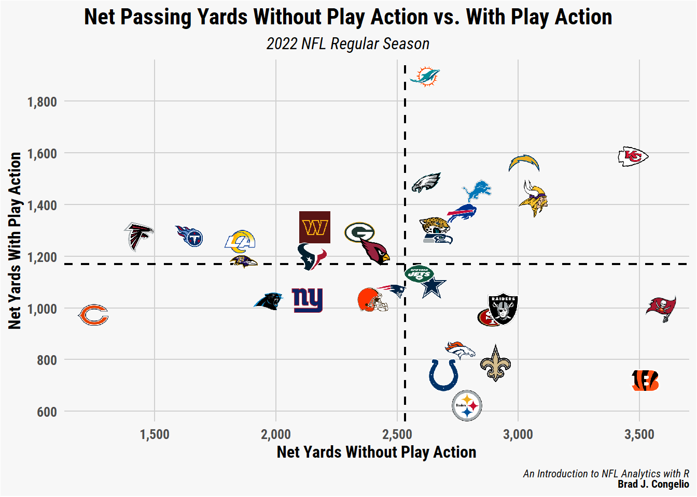
5.7 Creating a geom_line Plot
A geom_line() plot are useful when you want to display the trends and/or relationships in data over a continuous variable (such as seasons). In that context a geom_line() plot can be used to explore player statistics over time (such as passing yards and rushing yards), or to do the same but at the team level, or even comparing one team against another by including two (or more!) lines on one plot.
Like all other geom_ types, the basic foundation of a line graph can be created by, first, calling the ggplot() function and then adding geom_line() after. To begin building our first line graph, let’s read in the below data that contains information regarding the fourth-down attempt percentages by the Philadelphia Eagles into a data frame titled eagles_fourth_downs.
eagles_fourth_downs <- vroom::vroom("https://raw.githubusercontent.com/bcongelio/nfl-analytics-with-r-book/origin/example_data/csv/eagles_fourth_downs.csv")The data frames includes information regarding the season, the total fourth downs in each season, the number of fourth-down attempts in total_go, and the conversion percentage in go_pct. As well, the data has already been joined with information from nflreadr::load_teams() to include colors and logos.
Let’s build the foundation of the plot by using ggplot() and geom_line() and placing the season on the x-axis and the go_pct on the y-axis.
ggplot(eagles_fourth_downs, aes(x = season, y = go_pct)) +
geom_line()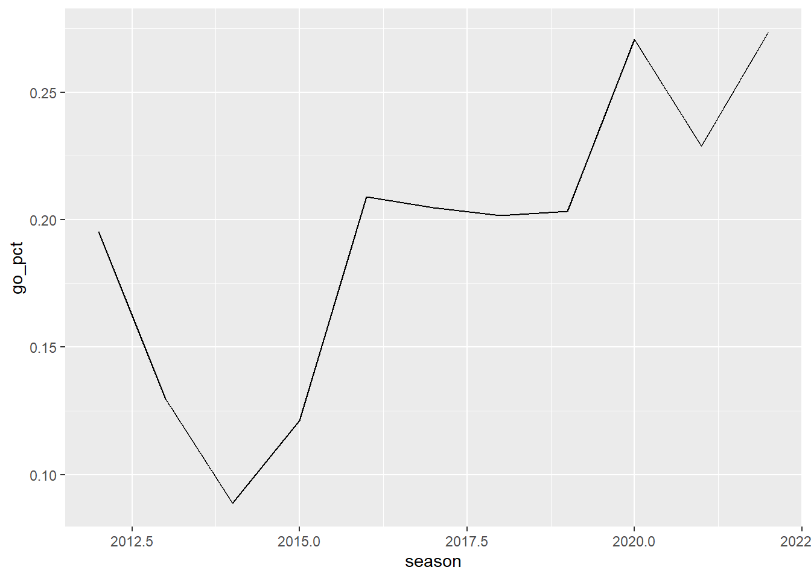
The above output is a very basic line graph. Based on this output, we can start making modifications to multiple items to reach the end result in a step-by-step fashion. First, let’s explore making changes to scale of both the x and y-axis. Given that this is an examination of a yearly statistic, the x-axis should include every season in the data frame (whereas it currently from 2012 to 2015, and then 2015 to 2018). The y-axis can be changed to be whole numbers, and to include the % after each number.
ggplot(eagles_fourth_downs, aes(x = season, y = go_pct)) +
geom_line() +
scale_x_continuous(breaks = seq(2012, 2022, 1)) +
scale_y_continuous(breaks = scales::pretty_breaks(),
labels = scales::percent_format())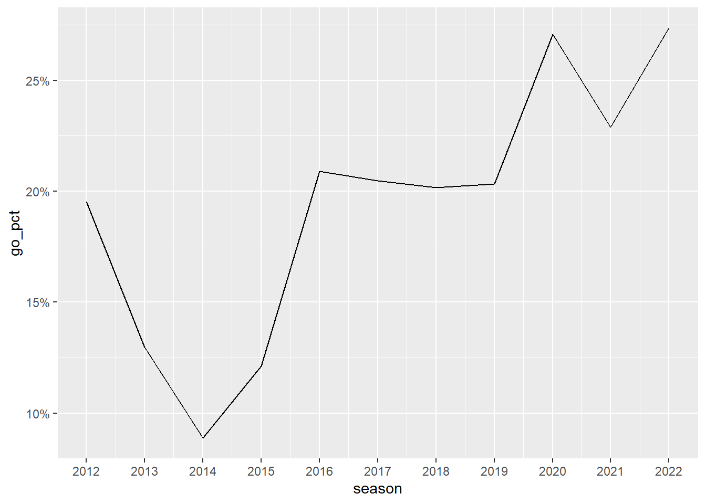
Please note that difference in how the breaks on each scale was handled. Because we want each year on the x-axis, we manually controlled the output by using the seq() function to start the x-axis at 2012 and to increase by 1 until the final number of 2022 is reached. On the other hand, we used the pretty_breaks() function from scales to format the number of breaks on the y-axis and then used percent_format() to edit the labels to be whole numbers with the percentage sign included.
Next, we can add more geom_ types to highlight the general percentage for each season on the x-axis. We will add one geom_point() to to indicate the percentage for each season. And then, for aesthetic purposes, we will add a second geom_point() that is larger than the original, with a color that matches the eventual background, to give the visual impression that the line doesn’t quite “reach” the point. Lastly, because we are dealing with aesthetic issues like size and color, we will increase the size of the geom_line() and also add the Eagles’ secondary team color to it.
ggplot(eagles_fourth_downs, aes(x = season, y = go_pct)) +
geom_line(size = 2, color = eagles_fourth_downs$team_color2) +
geom_point(size = 5, color = "#f7f7f7") +
geom_point(size = 3, color = eagles_fourth_downs$team_color) +
scale_x_continuous(breaks = seq(2012, 2022, 1)) +
scale_y_continuous(breaks = scales::pretty_breaks(),
labels = scales::percent_format())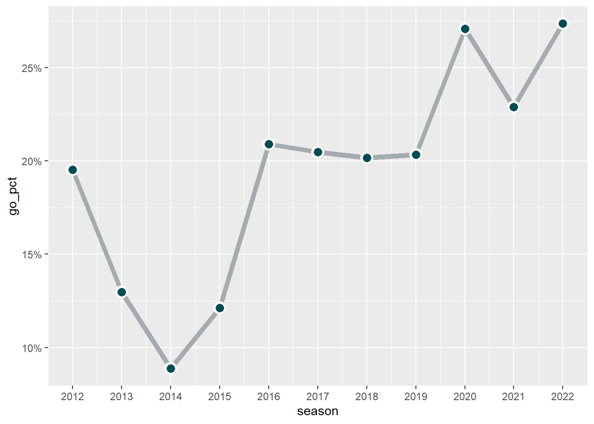
The order in which we apply all three geom_ types is important because, as previously discussed, a ggplot() is layered with the first items being placed under the items that come next. In this case, geom_line() is under the first geom_point() which is then placed under the second geom_point().
To complete the visualization, we can attached our custom nfl_analytics_theme() and then use xlab, ylab, and labs to edit the titles of the each axis and to include a title, subtitle, and caption.
ggplot(eagles_fourth_downs, aes(x = season, y = go_pct)) +
geom_line(size = 2, color = eagles_fourth_downs$team_color2) +
geom_point(size = 5, color = "#f7f7f7") +
geom_point(size = 3, color = eagles_fourth_downs$team_color) +
scale_x_continuous(breaks = seq(2012, 2022, 1)) +
scale_y_continuous(breaks = scales::pretty_breaks(),
labels = scales::percent_format()) +
nfl_analytics_theme() +
xlab("Season") +
ylab("Go For It Percentage") +
labs(title = "**Philadelphia Eagles: Fourth-Down Attempt Percentage**",
subtitle = "*2012 - 2022: Regular Season*",
caption = "*An Introduction to NFL Analytics with R*<br>**Brad J. Congelio**")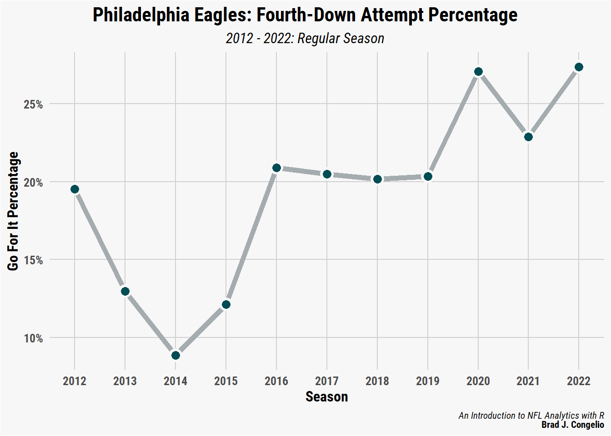
The resulting visualization shows cases how often the Philadelphia Eagles went for it on fourth down between 2012 and 2022. The upward trend , especially starting in 2019, generally follows an established trend among NFL head coaches. Given that, how does the Eagles’ trend compare to the rest of the NFL?
We can visualize this by adding a second geom_line that shows the averaged go_pct for the other 31 NFL teams.
5.7.1 Adding Secondary geom_line For NFL Averages
The combined_fourth_data data frame created by running the below code includes the same information as before for the Philadelphia Eagles, but also includes the NFL as a posteam for the 2012-2022 seasons along with the total fourth down attempt and conversion rate.
combined_fourth_data <- vroom::vroom("https://raw.githubusercontent.com/bcongelio/nfl-analytics-with-r-book/origin/example_data/csv/combined_fourth_data.csv")The addition of a second geom_line() to the plot - one that belongs to the Eagles and one that belongs to averaged number for all other NFL teams - requires a few new additions to our previous code. First, in the ggplot() call, we’ve added group = posteam. Because the data is structured so that PHI and NFL are both observations in the posteam column, the use of group = posteam instructs ggplot() to “split” that information into two and to create a geom_line() for each. Second, we’ve added scale_color_manual to the code and manually assigned the appropriate hex code colors to each like (#004C54 for the Eagles and #013369 for the rest of the NFL).
ggplot(combined_fourth_data, aes(x = season, y = go_pct, group = posteam)) +
geom_line(size = 2, aes(color = posteam)) +
scale_color_manual(values = c("#013369", "#004C54")) +
geom_point(size = 5, color = "#f7f7f7") +
geom_point(size = 3, aes(color = posteam)) +
nfl_analytics_theme() +
scale_x_continuous(breaks = seq(2012, 2022, 1)) +
scale_y_continuous(breaks = scales::pretty_breaks(),
labels = scales::percent_format()) +
nfl_analytics_theme() +
theme(legend.position = "none") +
xlab("Season") +
ylab("Go For It Percentage") +
labs(title = "**Philadelphia Eagles vs. NFL: Fourth-Down Attempt Percentage**",
subtitle = "*2012 - 2022: Regular Season*",
caption = "*An Introduction to NFL Analytics with R*<br>**Brad J. Congelio**")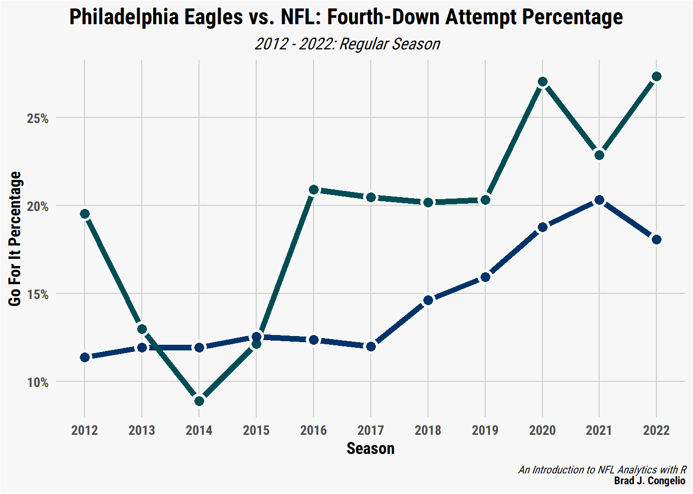
The resulting visualization does a very good job at showing the upward trend in head coaches going for it on fourth down and that the Eagles are consistently more aggressive in such situations than the rest of the NFL.
5.8 Creating a geom_area Plot
A geom_area() plot is similar to a geom_line() plot in that it is also often used to display quantitative data over a continuous variable. The core difference, however, is that the geom_area() plot provides the ability to fill in the surface area between the x-axis and the line. To showcase this, the mahomes_epa data frame created by running the below code contains Patrick Mahomes’ average EPA for each week of the 2022 regular season, as well as the opponent and the opponent’s team logo.
mahomes_epa <- vroom::vroom("https://raw.githubusercontent.com/bcongelio/nfl-analytics-with-r-book/origin/example_data/csv/mahomes_epa.csv")The basics of the completed plot can be output by placing week on the x-axis and mean_qb_epa on the y-axis and then using geom_area(). Also included in the geom_area() are two arguments (fill and alpha). The hex color for the Kansas City Chiefs’ secondary color is provided to “fill” in the area and then the alpha is set to 0.4 to make it slightly transparent.
ggplot(data = mahomes_epa, aes(x = week, y = mean_qb_epa)) +
geom_area(fill = "#FFB612", alpha = 0.4)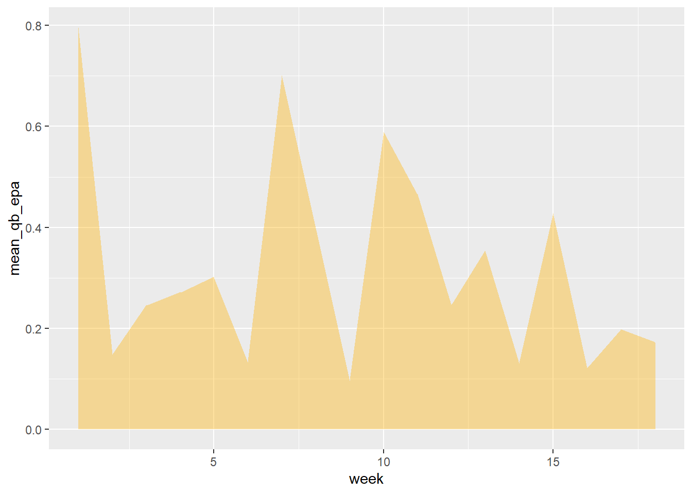
To help the geom_area() “pop” a bit more off the background, we will now included a geom_line() that “rides” across the top of the geom_area() and also add geom_smooth() to show the week-by-week trend of Mahomes’ average EPA.
ggplot(data = mahomes_epa, aes(x = week, y = mean_qb_epa)) +
geom_smooth(se = FALSE, color = "black", linetype = "dashed") +
geom_area(fill = "#FFB612", alpha = 0.4) +
geom_line(color = "#E31837", size = 1.5)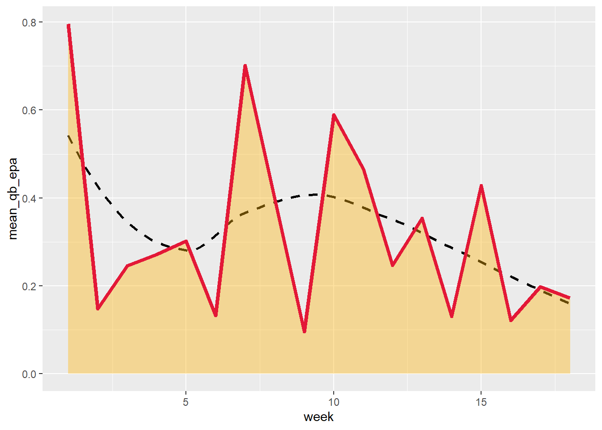
While the plot does provide information regarding Mahomes’ average EPA, we still do not know who he was playing on any given week. To add this information, we can use the geom_image() function from ggimage to add the logo of each opponent to the points of the geom_area().
ggplot(data = mahomes_epa, aes(x = week, y = mean_qb_epa)) +
geom_smooth(se = FALSE, color = "black", linetype = "dashed") +
geom_area(fill = "#FFB612", alpha = 0.4) +
geom_line(color = "#E31837", size = 1.5) +
geom_image(aes(image = team_logo_wikipedia), size = 0.045, asp = 16/9)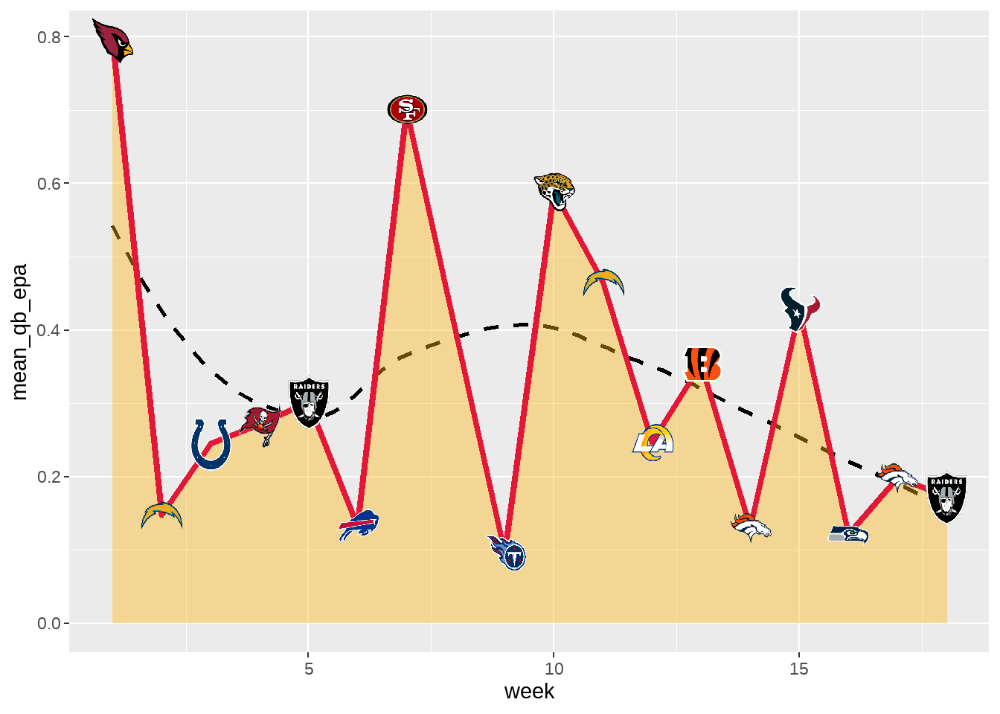
With the logos of each opponent added, we can turn to the finishing touches including adding our custom theme, changing the title of each axis, and adding a title. We also need to make edits to the scale of each axis, again using seq() to include all 18 weeks on the x-axis.
ggplot(data = mahomes_epa, aes(x = week, y = mean_qb_epa)) +
geom_smooth(se = FALSE, color = "black", linetype = "dashed") +
geom_area(fill = "#FFB612", alpha = 0.4) +
geom_line(color = "#E31837", size = 1.5) +
geom_image(aes(image = team_logo_wikipedia), size = 0.045, asp = 16/9) +
scale_x_continuous(breaks = seq(1,18,1)) +
scale_y_continuous(breaks = scales::pretty_breaks()) +
nfl_analytics_theme() +
xlab("Week") +
ylab("Average QB EPA") +
labs(title = "**Patrick Mahomes: Mean QB EPA per Week**",
subtitle = "*2022 Regular Season*",
caption = "*An Introduction to NFL Analytics with R*<br>**Brad J. Congelio**")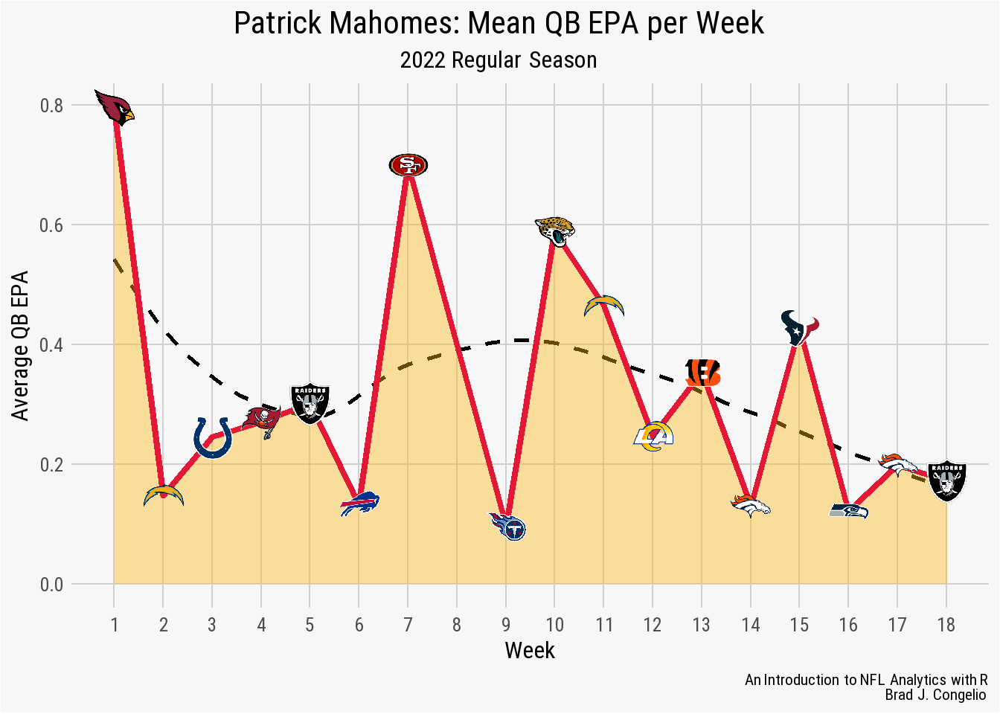
The finished visualization indicates that Mahomes’ had his highest average EPA in week 1 against the Arizona Cardinals (at roughly 0.8) before dropping considerably for week two through six. However, after a spike in week 7 against the 49ers, the geom_smooth() shows a continued downward trend for the remainder of the season, including four poor performances (by Mahomes’ standard, anyways) against the Broncos, Seahawks, and Raiders to end the season.
5.9 Creating a geom_col Plot
To begin creating our geom_col plot, we will use vroom to gather the necessary data into a data frame titled qb_thirddown_data. The resulting data frame includes the top ten quarterback in “third down aggressiveness.” The metric is calculated by first gathering the total number of 3rd down passing attempts by each quarterback with 10 or less yards to go. A pass attempt is considered “aggressive” if the total air yards is equal to - or greater than - the needed yards to go. Based on this calculation, Tua Tagovailoa was the most aggressive quarterback on 3rd downs during the 2022 regular season.
Because this is not a metric that is constructed against a continuous variable (such as season in the geom_line() examples), we turn to using geom_col().
qb_thirddown_data <- vroom::vroom("https://raw.githubusercontent.com/bcongelio/nfl-analytics-with-r-book/origin/example_data/csv/qb_thirddown_plot.csv")
qb_thirddown_data# A tibble: 10 x 8
passer passer_id total qb_agg qb_agg_pct team_color team_col~1 heads~2
<chr> <chr> <dbl> <dbl> <dbl> <chr> <chr> <chr>
1 T.Tagovailoa 00-0036212 88 58 0.659 #008E97 #F58220 https:~
2 D.Carr 00-0031280 121 73 0.603 #000000 #A5ACAF https:~
3 P.Mahomes 00-0033873 154 90 0.584 #E31837 #FFB612 https:~
4 K.Pickett 00-0038102 114 66 0.579 #000000 #FFB612 https:~
5 T.Lawrence 00-0036971 140 79 0.564 #006778 #000000 https:~
6 K.Cousins 00-0029604 159 89 0.560 #4F2683 #FFC62F https:~
7 A.Dalton 00-0027973 118 66 0.559 #D3BC8D #000000 https:~
8 M.Stafford 00-0026498 74 41 0.554 #003594 #FFD100 https:~
9 J.Garoppolo 00-0031345 84 46 0.548 #AA0000 #B3995D https:~
10 M.Jones 00-0036972 107 58 0.542 #002244 #C60C30 https:~
# ... with abbreviated variable names 1: team_color2, 2: headshot_urlTo start, we will place passer_id on the x-axis and qb_agg_pct on the y-axis. However, to make sure the columns are plotted in descending order, we use the reorder() function to reorder passer_id in descending order by the qb_agg_pct variable.
ggplot(data = qb_thirddown_data, aes(x = reorder(passer_id, -qb_agg_pct), y = qb_agg_pct)) +
geom_col()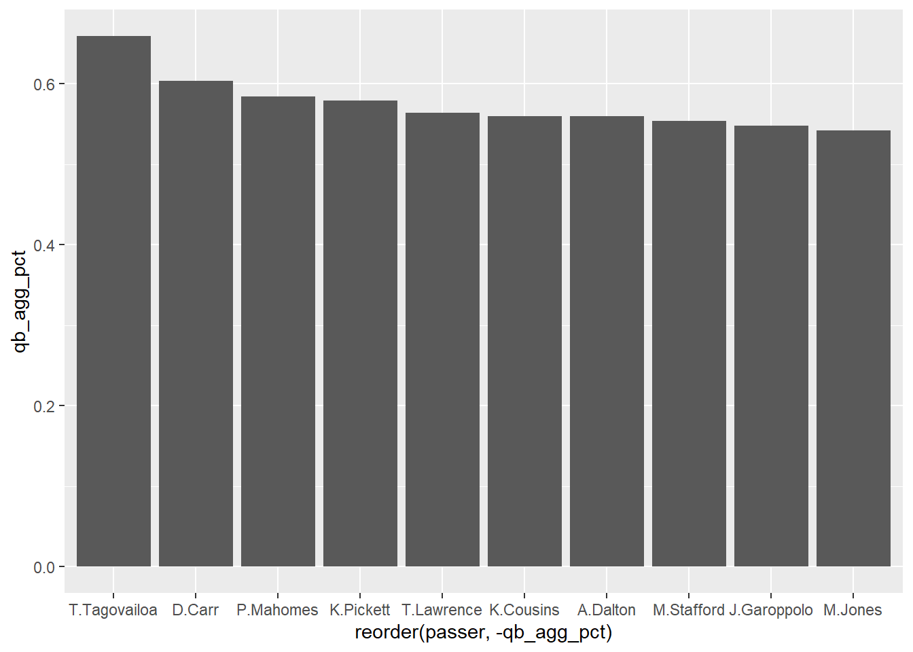
The resulting plot is a solid foundation and just needs aesthetic adjustments and additions to bring it to the final version. We will first use the fill argument to add the respective team colors to each column and then the color argument to add the secondary team color as an outline to each column.
ggplot(data = qb_thirddown_data, aes(x = reorder(passer_id, -qb_agg_pct), y = qb_agg_pct)) +
geom_col(fill = qb_thirddown_data$team_color, color = qb_thirddown_data$team_color2)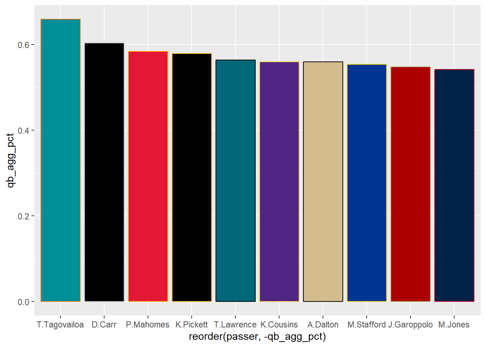
Next we can make adjustments to each axis. Using scale_y_continuous, we will set the number of breaks with pretty_breaks() and then use percent_format() to adjust the scale into whole numbers with the accompanying percentage sign. The expand() argument is used is set to c(0,0) to get rid of the “dead space” between the bottom of each column and the y-axis.
We can also provide the xlab(), ylab(), and include our custom nfl_analytics_theme() to the plot.
ggplot(data = qb_thirddown_data, aes(x = reorder(passer_id, -qb_agg_pct), y = qb_agg_pct)) +
geom_col(fill = qb_thirddown_data$team_color, color = qb_thirddown_data$team_color2) +
scale_y_continuous(breaks = scales::pretty_breaks(),
labels = scales::percent_format(),
expand = c(0,0)) +
xlab("") +
ylab("QB Aggressiveness on 3rd Down") +
nfl_analytics_theme()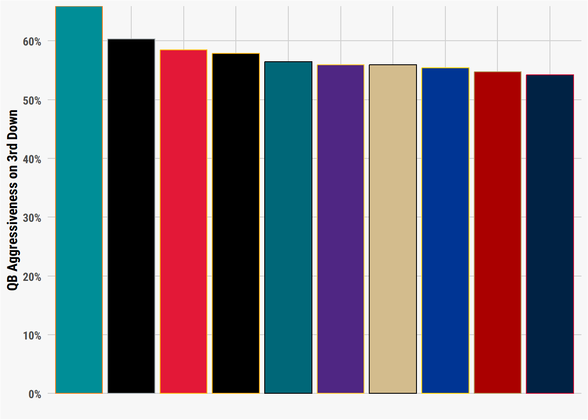
We will provide two ways to identify which column belong to which quarterback: by adding the player name to the column and by including each player’s headshot at the bottom of each.
To place the player name on each column, we will use the geom_text() function wrapped inside the with_outer_glow() function (which is part of the ggfx package). The with_outer_glow() function allows us to apply a drop shadow effect to the text, making sure that it is easy to read on the colored background of each column. The geom_text function accepts the arguments relating to the angle, horizontal adjustment hjust, color, font family, font face, and size of the text. The with_outer_glow function is used to apply the sigma (how dark or light to make the shadow/glow), expand (how far to spread out the glow/shadow), and color.
ggplot(data = qb_thirddown_data, aes(x = reorder(passer_id, -qb_agg_pct), y = qb_agg_pct)) +
geom_col(fill = qb_thirddown_data$team_color, color = qb_thirddown_data$team_color2) +
with_outer_glow(geom_text(aes(label = passer), position = position_stack(vjust = .98),
angle = 90, hjust = .98, color = "white",
family = "Roboto Condensed", fontface = "bold", size = 8),
sigma = 6, expand = 1, color = "black") +
scale_y_continuous(breaks = scales::pretty_breaks(),
labels = scales::percent_format(),
expand = c(0,0)) +
xlab("") +
ylab("QB Aggressiveness on 3rd Down") +
nfl_analytics_theme()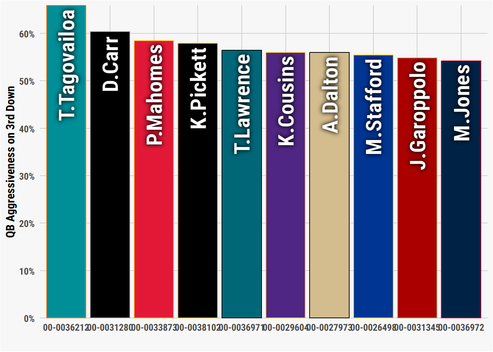
To add player headshot to the bottom of each column, we use the element_nfl_headshot function from the nflplotR package. Inside the theme() option, we use element_nfl_headshot() to replace the axis_text.x(). It is important to remember to use passer_id on the x-axis (rather than passer_name or something similar). The nflplotR package uses the passer_id to automatically pull the correct headshot for each player. Without including passer_id in the x-axis, the resulting headshots will be the “blank” NFL picture.
ggplot(data = qb_thirddown_data, aes(x = reorder(passer_id, -qb_agg_pct), y = qb_agg_pct)) +
geom_col(fill = qb_thirddown_data$team_color, color = qb_thirddown_data$team_color2) +
with_outer_glow(geom_text(aes(label = passer), position = position_stack(vjust = .98),
angle = 90, hjust = .98, color = "white",
family = "Roboto Condensed", fontface = "bold", size = 8),
sigma = 6, expand = 1, color = "black") +
scale_y_continuous(breaks = scales::pretty_breaks(),
labels = scales::percent_format(),
expand = c(0,0)) +
theme(axis.text.x = nflplotR::element_nfl_headshot(size = 1)) +
xlab("") +
ylab("QB Aggressiveness on 3rd Down") +
nfl_analytics_theme()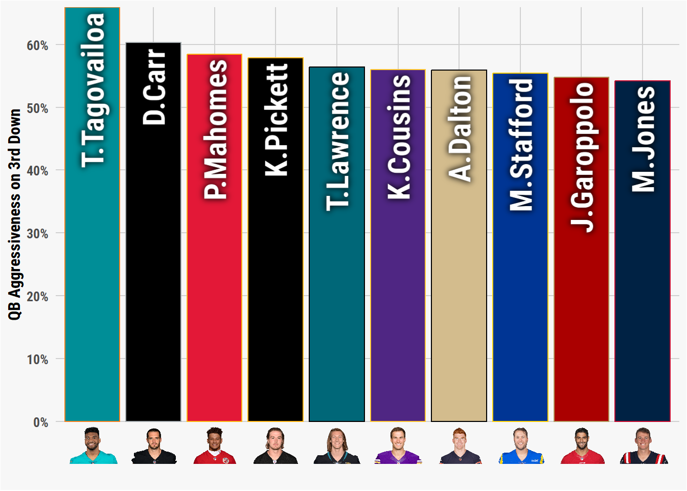
To complete the plot, we can add the title, subtitle, and caption using the labs function.
ggplot(data = qb_thirddown_data, aes(x = reorder(passer_id, -qb_agg_pct), y = qb_agg_pct)) +
geom_col(fill = qb_thirddown_data$team_color, color = qb_thirddown_data$team_color2) +
with_outer_glow(geom_text(aes(label = passer), position = position_stack(vjust = .98),
angle = 90, hjust = .98, color = "white",
family = "Roboto Condensed", fontface = "bold", size = 8),
sigma = 6, expand = 1, color = "black") +
scale_y_continuous(breaks = scales::pretty_breaks(),
labels = scales::percent_format(),
expand = c(0,0)) +
theme(axis.text.x = nflplotR::element_nfl_headshot(size = 1)) +
xlab("") +
ylab("QB Aggressiveness on 3rd Down") +
nfl_analytics_theme() +
labs(title = "**QB Aggressiveness on Third Down**",
subtitle = "*Numbers of Times Air Yards >= Yards To Go*",
caption = "*An Introduction to NFL Analytics with R*<br>**Brad J. Congelio**")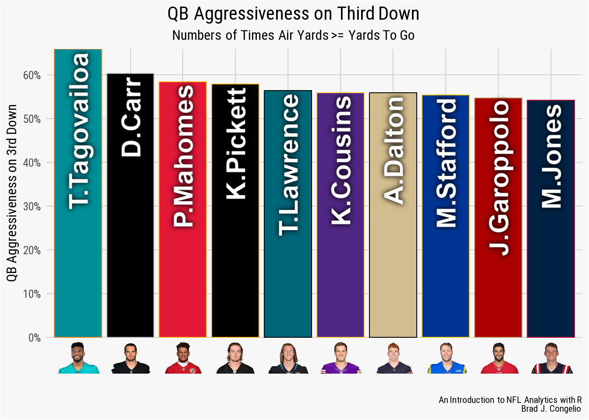
As highlighted in the resulting plot, Tagovailoa was the only QB in the league to go above 60% in aggressiveness (Derek Carr was an even 60%). In this case, our domain knowledge of the NFL is important as we will recall that Tua was out for portions of the 2022 regular season as a result of concussions. His aggressive percentage could be slightly inflated because of the fewer games compared to the other quarterbacks.
5.9.1 An Alternative geom_col Plot
The geom_col() plot is incredibly versatile, allowing you to create multiple types of visualizations. For example, we can use the data frame below, epa_per_play, to graph each teams average EPA per play during the 2022 regular season. However, rather than plot it in a standard column format like above, we will plot it in a “left-to-right” design with each team diverging from the 0.00 EPA per Play.
epa_per_play <- vroom::vroom("https://raw.githubusercontent.com/bcongelio/nfl-analytics-with-r-book/origin/example_data/csv/epa_per_play.csv")The ggplot() code required to output the visulization is quite similar to our above geom_col() plot for QB aggressiveness. There are several distinct differences, however.
- We’ve included a
fill = if_else()argument ingeom_col(). If a team has a positive EPA per play, the column for that team will be blue. If the team has a negative EPA per play, the column will be red. - The use of
scale_fill_identity()is used because the data has already been scaled (by EPA per play) and already represents aesthetic values that are native toggplot2(). -
scale_y_discreteis used because the y-axis is team names rather than a continuous variables. Moreover,expand = c(.05, 0))is included to make sure that the Chiefs and Texans logos are not clipped during the processing of the plot.
ggplot(data = epa_per_play, aes(x = epa_per_play, y = reorder(posteam, epa_per_play))) +
geom_col(aes(fill = if_else(epa_per_play >= 0, "#2c7bb6", "#d7181c")), width = 0.2) +
geom_vline(xintercept = 0, color = "black") +
scale_fill_identity() +
geom_image(aes(image = team_logo_wikipedia), asp = 16/9, size = .035) +
xlab("EPA Per Play") +
ylab("") +
scale_x_continuous(breaks = scales::pretty_breaks(n = 6)) +
scale_y_discrete(expand = c(.05, 0)) +
nfl_analytics_theme() +
theme(axis.text.y = element_blank()) +
labs(title = "**Expected Points Added per Play**",
subtitle = "*2022 Regular Season*",
caption = "*An Introduction to NFL Analytics with R*<br>**Brad J. Congelio**")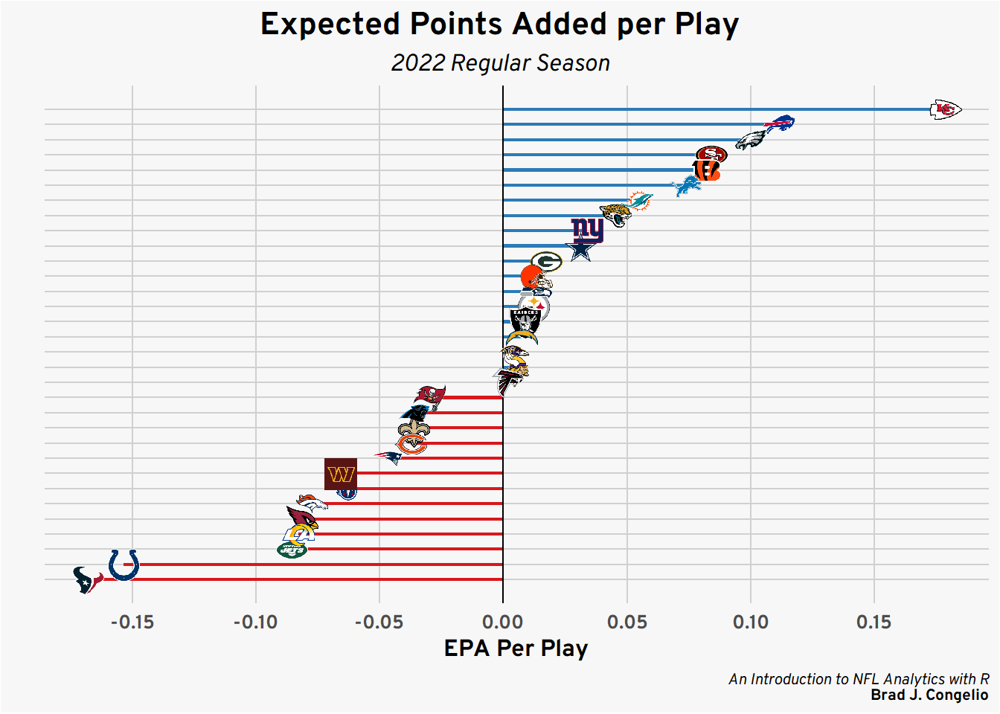
It should not be a surprise that the Chiefs outperfor - by a large margin - the rest of the NFL. The Texans and Colts, on the other hand, averaged -0.15 expected points added per play during the 2022 regular season.
5.10 Creating a geom_box Plot
We can create a geom_box() plot to examine the distribution of air yards for each playoff team from the 2022 season. A box plot is a suitable way to, as mentioned, view distribution but to also view the “skewness” of a metric by also including the interquartile ranges, averages, and any outliers in the data.
playoff_airyards_plot <- vroom::vroom("https://raw.githubusercontent.com/bcongelio/nfl-analytics-with-r-book/origin/example_data/csv/playoff_airyards_plot.csv")The geom_boxplot() function includes one more argument - color. In this case, we have set the argument to black. We will also include the geom_jitter() function, which will plot each pass underneath the box plot. This is not a requirement for a box plot, but does add an additional level of aesthetics and detail to the final plot. Last, we use the element_nfl_logo function to place the respective team logo under each box plot.
ggplot(data = playoff_airyards_plot, aes(x = posteam, y = air_yards, fill = posteam)) +
geom_jitter(color = playoff_airyards_plot$team_color, alpha = 0.09) +
geom_boxplot(color = "black") +
nflplotR::scale_fill_nfl() +
scale_y_continuous(breaks = scales::pretty_breaks()) +
nfl_analytics_theme() +
ylab("Air Yards") +
xlab("") +
labs(title = "**Distribution of Regular Season Air Yards**",
subtitle = "*2022 NFL Playoff Teams*",
caption = "*An Introduction to NFL Analytics with R*<br>**Brad J. Congelio**") +
theme(axis.text.x = element_nfl_logo(size = 1.25))
In the visualization, each box plot represent the interquartile range (IQR) of air yards distribution for each team. The black line represents the median average, while the area below the black line is the lower quartile (Q1), or the 25th percentile, while the area above is the upper quartile (Q3), or the 75th percentile. The “whisker” coming from both ends of the box plot represent the minimum and maximum amounts (where the minimum is Q1 - 1.5 * IQR and the maximum is Q3 + 1.5 * IQR). The black dots above the whiskers indicate outliers.
Based on the results, the Miami Dolphins had the highest median air yards of the 2022 playoff teams while the New York Giants had the smallest spread (indicated by the 25th and 75th percentiles being closest to the median).
5.11 Creating a geom_ridges Plot
We can take the same idea used in the geom_boxplot() graph to reformat it to be used in a geom_ridges() plot, which is another option to represent the distribution of a continuous variable.
playoff_airyards_ridges_plot <- vroom::vroom("https://raw.githubusercontent.com/bcongelio/nfl-analytics-with-r-book/origin/example_data/csv/playoff_airyards_ridges_plot.csv")Before creating the plot, we will create a function titled meansd that will assist in including lines within the geom_ridges() to show the mean and standard deviation for each team.
The meansd function is included in the geom_density_ridges() arguments. We do wish to show quantile_lines, so we provide meansd to the quantile_fun argument and then set the color of the quantile lines.
### creating function to add SD, mean, and mean + sd
meansd <- function(x, ...) {
mean <- mean(x)
sd <- sd(x)
c(mean - sd, mean, mean + sd)
}
### plotting the data
ggplot(data = playoff_airyards_ridges_plot, aes(x = air_yards,y = reorder(posteam, -air_yards), fill = posteam)) +
geom_density_ridges(quantile_lines = T, quantile_fun = meansd, color = "#d0d0d0") +
nflplotR::scale_fill_nfl() +
scale_x_continuous(breaks = scales::pretty_breaks()) +
nfl_analytics_theme() +
xlab("Air Yards") +
ylab("") +
labs(title = "**Distribution of Regular Season Air Yards**",
subtitle = "*2022 NFL Playoff Teams*",
caption = "*An Introduction to NFL Analytics with R*<br>**Brad J. Congelio**") +
theme(axis.text.y = element_nfl_logo(size = 1.25))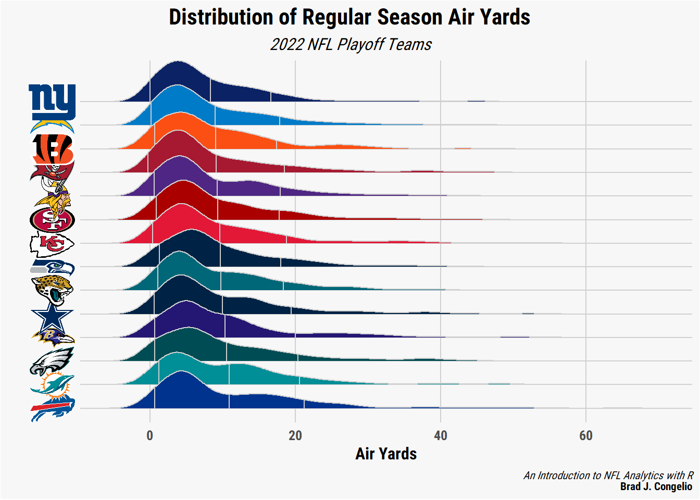
5.12 Creating a geom_violin Plot
yards_gained_compared <- vroom::vroom("https://raw.githubusercontent.com/bcongelio/nfl-analytics-with-r-book/origin/example_data/csv/yards_gained_compared.csv")custom_labeller <- function(variable, value){
new_labels <- c("1st Down", "2nd Down", "3rd Down")
return(new_labels[value])
}
ggplot(data = yards_gained_compared, aes(x = posteam, y = yards_gained, group = posteam, fill = posteam)) +
geom_violin() +
stat_summary(fun.y = mean, fun.ymin = mean, fun.ymax = mean,
geom = "crossbar",
width = 0.50,
position = position_dodge(width = .25)) +
facet_wrap(~down, labeller = labeller(down = custom_labeller)) +
scale_fill_manual(values = c("#E31837", "#013369")) +
ylab("Average Yards Gained") +
xlab("") +
labs(title = "*Averaged Yards Gained per Down*",
subtitle = "**KC Chiefs vs. NFL: 2022 Regular Season**",
caption = "**An Introduction to NFL Analytics with R**<br>*Brad J. Congelio*") +
theme(axis.text.x = nflplotR::element_nfl_logo(size = 1.5),
legend.position = "none",
strip.text = element_text(family = "Roboto Condensed", face = "bold"),
strip.background = element_rect(fill = "#f7f7f7")) +
nfl_analytics_theme()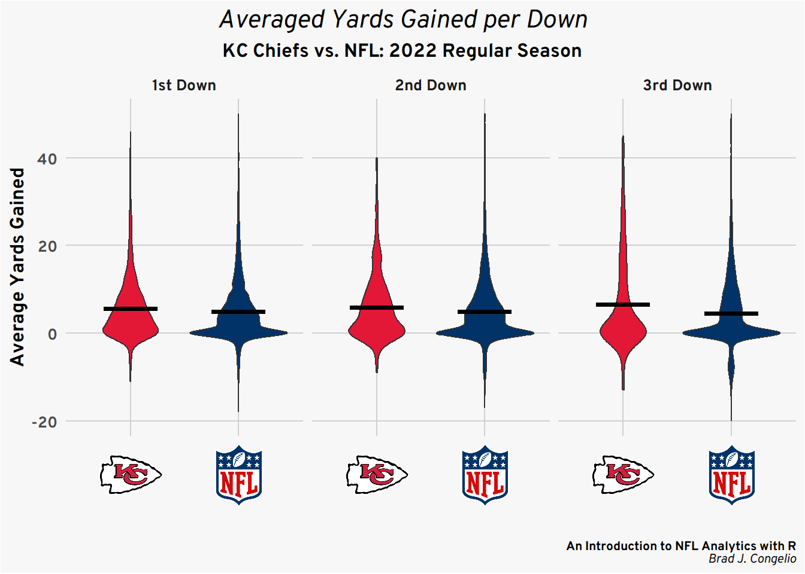
5.13 Creating a geom_histogram Plot
def_yards_allowed <- vroom::vroom("https://raw.githubusercontent.com/bcongelio/nfl-analytics-with-r-book/origin/example_data/csv/def_yards_allowed.csv")ggplot(data = def_yards_allowed, aes(x = yards_allowed, fill = defteam)) +
geom_histogram(binwidth = 50) +
nflplotR::scale_fill_nfl(type = "primary") +
scale_x_continuous(breaks = seq(200, 500, 100)) +
scale_y_continuous(breaks = scales::pretty_breaks()) +
facet_wrap(vars(defteam), scales = "free_x") +
nfl_analytics_theme() +
theme(strip.text = element_nfl_wordmark(size = .5),
strip.background = element_rect(fill = "#F7F7F7")) +
xlab("Defensive Yards Allowed") +
ylab("Total Count") +
labs(title = "*Histogram of Defensive Yards Allowed*",
subtitle = "**2022 NFL Regular Season**",
caption = "*An Introduction to NFL Analytics with R*<br>**Brad J. Congelio**")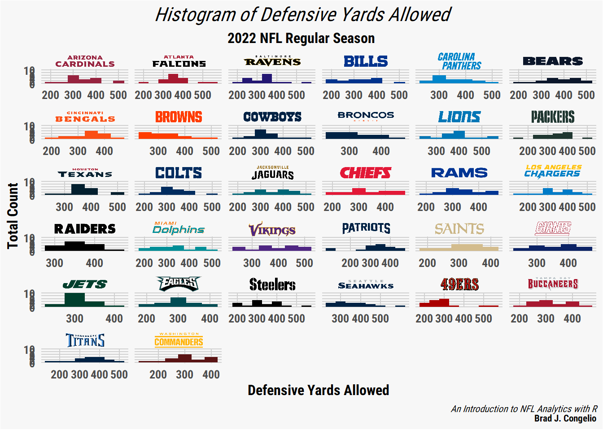
5.14 Advanced Headshots Method
The ability to include player headshots onto plots is an outstanding addition to the NFL analytics universe. However, the headshots themselves quite often have “harsh” aesthetics in that the image is cut off at the shoulders and, as a result, can result in plots where the shoulders just seem to “fall off” into the abyss of the plot itself.
To correct this, we can use several different package to create circular croppings of the of the individual headshot images and then wrap the player’s name around the image itself.
To showcase the process, let’s create a data frame titled complete_wr_airyards with the below code:
complete_wr_airyards <- vroom::vroom("url here")To begin the process, we create a data frame called crop_circles_data that includes just one observation for each wide receive that includes the receiver_id and headshot_url variables. After, we create a new column in crop_circles_data called circle and then use the circle_crop function from the cropcircles package to automatically crop each player’s headshot into a uniform circle. The resulting image is saved locally on your device. Last, since we no longer need the headshot_url information, we drop that from the crop_circles_data data frame.
crop_circles_data <- complete_wr_airyards %>%
select(receiver_id, headshot_url) %>%
distinct(receiver_id, .keep_all = TRUE)
crop_circles_data <- crop_circles_data %>%
mutate(circle = cropcircles::circle_crop(headshot_url))
crop_circles_data <- crop_circles_data %>%
select(receiver_id, circle)The next step, which is a modified version of an approach used by Tanya Shapiro, is multifaceted. We first use the magick package to create a composite of the image and place a white background behind the circular cropped headshot.
We then create a function called plot_image_label that will wrap each player’s name around the top of the circular headshot and then proceed with producing the images with the names wrapped using ggplot().
border <- function(im) {
ii <- magick::image_info(im)
ii_min <- min(ii$width, ii$height)
img <- image_blank(width = ii_min, height = ii_min, color = "none")
drawing <- image_draw(img)
symbols(ii_min/2, ii_min/2, circles = ii_min/2.2, bg = "white", inches = FALSE, add = TRUE)
dev.off()
x = image_composite(image_scale(drawing, "x430"), image_scale(im, "x400"), offset = "+15+15")
x
}
### now let's add the player's name and wrap it around the circle
plot_image_label<-function(image,
label,
font_color="black",
top_bottom="top",
hjust = 0.5){
t = seq(0, 1, length.out = 100) * pi
### set up data
if(top_bottom=="top"){data = data.frame(x = cos(t),y = sin(t))}
else if(top_bottom=="bottom"){data=data.frame(x = cos(t),y = sin(t)*-1)}
### set up data ### the `vjust` option here changes how close name is
if(top_bottom=="top"){vjust=0.5}
else if(top_bottom=="bottom"){vjust=-0.1}
### set up data
if(top_bottom=="top"){ymax=1.2}
else if(top_bottom=="bottom"){ymax=0.9}
### set up data
if(top_bottom=="top"){ymin=-0.9}
else if(top_bottom=="bottom"){ymin=-1.2}
### now taking the text an adding it into a ggplot with the circle
ggplot() +
geom_image(aes(x=0, y=0, image = image), asp=2.4/2.1, size=.7, image_fun=border) +
scale_x_continuous(limits = c(-1.2, 1.2))+
scale_y_continuous(limits=c(ymin, ymax))+
geom_textpath(data = data, aes(x,y,label = toupper(label)), linecolor=NA, color=font_color,
size = 16, fontface="bold", vjust = vjust, hjust=hjust, family = "Roboto Condensed")+
coord_equal()+
theme_void()
}After the process finishes running (it may take a while depending on your computing power), we create a new column titled new_image_path and use paste0 to copy the receiver_id for each player and add “.png” on the end.
crop_circles_data <- crop_circles_data %>%
mutate(new_image_path = paste0(receiver_id, ".png"))We then loop our crop_cirlces_data function back over the images and save them into a new images folder on our computer.
for(i in 1:nrow(crop_circles_data)) {
pos = "top"
hjust = 0.5
path = crop_circles_data$new_image_path[i]
plot = plot_image_label(image = crop_circles_data$circle[i],
label = crop_circles_data$receiver[i],
font_color = "black",
top_bottom = "top",
hjust = hjust)
ggsave(filename = glue("./images/circle_headshots/{path}"), plot=plot, height=3.95, width=4.5)
}
Important
crop_circles_data <- crop_circles_data %>%
mutate(image = glue("./images/circle_headshots/{new_image_path}"))We can now take our new cropped headshots and bring them into a visualization created with ggplot().
ggplot(complete_wr_ay, aes(x = air_yards, fill = posteam)) +
geom_density(alpha = .4) +
nflplotR::scale_fill_nfl() +
geom_image(data = complete_wr_ay, aes(x = 40, y = 0.04, image = image), size = 0.5) +
scale_x_continuous(breaks = scales::pretty_breaks()) +
scale_y_continuous(breaks = scales::pretty_breaks()) +
facet_wrap(~ receiver_id) +
nfl_analytics_theme() +
theme(strip.background = element_blank(),
strip.text= element_blank()) +
xlab("Air Yards") +
ylab("Density") +
labs(title = "**Top Ten WRs in Total Air Yards**",
subtitle = "*Density Plot of How They Were Earned - 2022 Regular Season*",
caption = "*An Introduction to NFL Analytics with R*<br>**Brad J. Congelio**")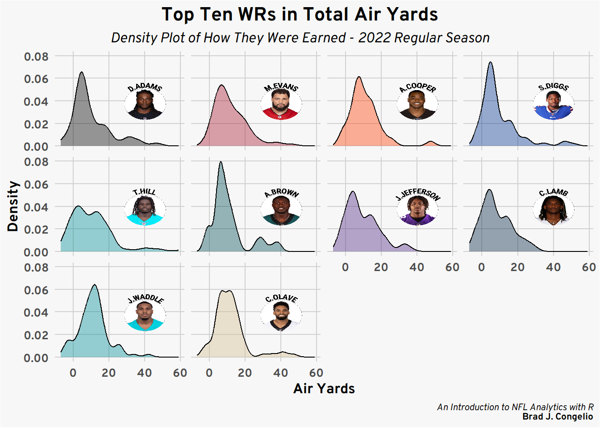
5.15 Creating Tables with gt and gtExtras
In some instances, you may find that a plot produced by ggplot2 is not the best medium in which to display your data. In that case, you may want to turn to use the gt package (and the accompanying add-on from Thomas Mock, gtExtras). Much like ggplot2 stands for the “grammar of graphics”, the gt package is short for the “grammar of tables.” Taking a data frame into a gt table is as simple as piping into the gt() function, but the end result will likely not be visually pleasing. To make the necessary adjustments, you will need to begin making changes to the output by altering the core parts of a gt table: the table header, the stub and stub head, the column labels, the table body, and the table footer.
To provide a walk through of this process, let’s read in prepared data that examines the top ten average completion percentage over expected for those attempts in a pure passing situation (that is, plays that have a predictive probability of 70% or greater of being a passing attempt).
pure_cpoe <- vroom::vroom("https://raw.githubusercontent.com/bcongelio/nfl-analytics-with-r-book/origin/example_data/csv/pure_cpoe.csv")As mentioned, we can quickly take the data and turn it into a gt table by piping it directly into the package’s core function.
pure_cpoe %>%
gt()| season | passer | total_attempts | mean_cpoe | headshot | team_logo_wikipedia |
|---|---|---|---|---|---|
| 2013 | P.Rivers | 291 | 10.893818 | https://static.www.nfl.com/image/private/f_auto,q_auto/league/voakyrtj34sghkwxaxxf | https://upload.wikimedia.org/wikipedia/en/thumb/7/72/NFL_Chargers_logo.svg/100px-NFL_Chargers_logo.svg.png |
| 2018 | P.Mahomes | 261 | 9.293220 | https://static.www.nfl.com/image/private/f_auto,q_auto/league/vs40h82nvqaqvyephwwu | https://upload.wikimedia.org/wikipedia/en/thumb/e/e1/Kansas_City_Chiefs_logo.svg/100px-Kansas_City_Chiefs_logo.svg.png |
| 2020 | A.Rodgers | 242 | 8.573572 | https://static.www.nfl.com/image/private/f_auto,q_auto/league/mee42twdk3qpcdotzdka | https://upload.wikimedia.org/wikipedia/commons/thumb/5/50/Green_Bay_Packers_logo.svg/100px-Green_Bay_Packers_logo.svg.png |
| 2013 | R.Wilson | 231 | 8.473162 | https://static.www.nfl.com/image/private/f_auto,q_auto/league/gebzv2aljujgleboe4ns | https://upload.wikimedia.org/wikipedia/en/thumb/8/8e/Seattle_Seahawks_logo.svg/100px-Seattle_Seahawks_logo.svg.png |
| 2018 | R.Wilson | 277 | 8.448647 | https://static.www.nfl.com/image/private/f_auto,q_auto/league/gebzv2aljujgleboe4ns | https://upload.wikimedia.org/wikipedia/en/thumb/8/8e/Seattle_Seahawks_logo.svg/100px-Seattle_Seahawks_logo.svg.png |
| 2011 | D.Brees | 311 | 8.285040 | https://static.www.nfl.com/image/private/f_auto,q_auto/league/i20xlpzdmn7xubotijjd | https://upload.wikimedia.org/wikipedia/commons/thumb/5/50/New_Orleans_Saints_logo.svg/98px-New_Orleans_Saints_logo.svg.png |
| 2018 | M.Ryan | 315 | 8.233131 | https://static.www.nfl.com/image/private/f_auto,q_auto/league/s6zam4ekrrnonsck6vak | https://upload.wikimedia.org/wikipedia/en/thumb/c/c5/Atlanta_Falcons_logo.svg/192px-Atlanta_Falcons_logo.svg.png |
| 2012 | M.Ryan | 303 | 8.108120 | https://static.www.nfl.com/image/private/f_auto,q_auto/league/s6zam4ekrrnonsck6vak | https://upload.wikimedia.org/wikipedia/en/thumb/c/c5/Atlanta_Falcons_logo.svg/192px-Atlanta_Falcons_logo.svg.png |
| 2015 | R.Wilson | 279 | 7.515386 | https://static.www.nfl.com/image/private/f_auto,q_auto/league/gebzv2aljujgleboe4ns | https://upload.wikimedia.org/wikipedia/en/thumb/8/8e/Seattle_Seahawks_logo.svg/100px-Seattle_Seahawks_logo.svg.png |
| 2021 | J.Burrow | 343 | 7.117319 | https://static.www.nfl.com/image/private/f_auto,q_auto/league/pbl27kxsr5ulgxmvtvfn | https://upload.wikimedia.org/wikipedia/commons/thumb/8/81/Cincinnati_Bengals_logo.svg/100px-Cincinnati_Bengals_logo.svg.png |
In some cases, the results might not be terrible … but, in this case, it is. The output is realistically just the data frame outputted into a different format, including the complete URLs for both the player headshot and team logos. Let’s begin making incremental changes to the table by first adding a title and subtitle, using Markdown (md()) to provide bold and italicized styling to each.
pure_cpoe %>%
gt() %>%
tab_header(
title = md("**Average CPOE in Pure Passing Situations**"),
subtitle = md("*2010-2022 | Pure Passing is >= 70% Chance of Pass Attempt*"))| Average CPOE in Pure Passing Situations | |||||
| 2010-2022 | Pure Passing is >= 70% Chance of Pass Attempt | |||||
| season | passer | total_attempts | mean_cpoe | headshot | team_logo_wikipedia |
|---|---|---|---|---|---|
| 2013 | P.Rivers | 291 | 10.893818 | https://static.www.nfl.com/image/private/f_auto,q_auto/league/voakyrtj34sghkwxaxxf | https://upload.wikimedia.org/wikipedia/en/thumb/7/72/NFL_Chargers_logo.svg/100px-NFL_Chargers_logo.svg.png |
| 2018 | P.Mahomes | 261 | 9.293220 | https://static.www.nfl.com/image/private/f_auto,q_auto/league/vs40h82nvqaqvyephwwu | https://upload.wikimedia.org/wikipedia/en/thumb/e/e1/Kansas_City_Chiefs_logo.svg/100px-Kansas_City_Chiefs_logo.svg.png |
| 2020 | A.Rodgers | 242 | 8.573572 | https://static.www.nfl.com/image/private/f_auto,q_auto/league/mee42twdk3qpcdotzdka | https://upload.wikimedia.org/wikipedia/commons/thumb/5/50/Green_Bay_Packers_logo.svg/100px-Green_Bay_Packers_logo.svg.png |
| 2013 | R.Wilson | 231 | 8.473162 | https://static.www.nfl.com/image/private/f_auto,q_auto/league/gebzv2aljujgleboe4ns | https://upload.wikimedia.org/wikipedia/en/thumb/8/8e/Seattle_Seahawks_logo.svg/100px-Seattle_Seahawks_logo.svg.png |
| 2018 | R.Wilson | 277 | 8.448647 | https://static.www.nfl.com/image/private/f_auto,q_auto/league/gebzv2aljujgleboe4ns | https://upload.wikimedia.org/wikipedia/en/thumb/8/8e/Seattle_Seahawks_logo.svg/100px-Seattle_Seahawks_logo.svg.png |
| 2011 | D.Brees | 311 | 8.285040 | https://static.www.nfl.com/image/private/f_auto,q_auto/league/i20xlpzdmn7xubotijjd | https://upload.wikimedia.org/wikipedia/commons/thumb/5/50/New_Orleans_Saints_logo.svg/98px-New_Orleans_Saints_logo.svg.png |
| 2018 | M.Ryan | 315 | 8.233131 | https://static.www.nfl.com/image/private/f_auto,q_auto/league/s6zam4ekrrnonsck6vak | https://upload.wikimedia.org/wikipedia/en/thumb/c/c5/Atlanta_Falcons_logo.svg/192px-Atlanta_Falcons_logo.svg.png |
| 2012 | M.Ryan | 303 | 8.108120 | https://static.www.nfl.com/image/private/f_auto,q_auto/league/s6zam4ekrrnonsck6vak | https://upload.wikimedia.org/wikipedia/en/thumb/c/c5/Atlanta_Falcons_logo.svg/192px-Atlanta_Falcons_logo.svg.png |
| 2015 | R.Wilson | 279 | 7.515386 | https://static.www.nfl.com/image/private/f_auto,q_auto/league/gebzv2aljujgleboe4ns | https://upload.wikimedia.org/wikipedia/en/thumb/8/8e/Seattle_Seahawks_logo.svg/100px-Seattle_Seahawks_logo.svg.png |
| 2021 | J.Burrow | 343 | 7.117319 | https://static.www.nfl.com/image/private/f_auto,q_auto/league/pbl27kxsr5ulgxmvtvfn | https://upload.wikimedia.org/wikipedia/commons/thumb/8/81/Cincinnati_Bengals_logo.svg/100px-Cincinnati_Bengals_logo.svg.png |
Adding the title and subtitle to the top of the table may not help much, as the two long-form URLs are stretching out the table and making it difficult to see the changes that are being made. Rather than including both the player’s picture and the team logo, let’s remove team_logo_wikipedia from being used by gt with the cols_hide() function and then place the player pictures into table by using gt_img_rows() from the gtExtras package.
pure_cpoe %>%
gt() %>%
cols_hide(team_logo_wikipedia) %>%
tab_header(
title = md("**Average CPOE in Pure Passing Situations**"),
subtitle = md("*2010-2022 | Pure Passing is >= 70% Chance of Pass Attempt*")) %>%
gt_img_rows(headshot, height = 25)| Average CPOE in Pure Passing Situations | ||||
| 2010-2022 | Pure Passing is >= 70% Chance of Pass Attempt | ||||
| season | passer | total_attempts | mean_cpoe | headshot |
|---|---|---|---|---|
| 2013 | P.Rivers | 291 | 10.893818 |  |
| 2018 | P.Mahomes | 261 | 9.293220 |  |
| 2020 | A.Rodgers | 242 | 8.573572 |  |
| 2013 | R.Wilson | 231 | 8.473162 |  |
| 2018 | R.Wilson | 277 | 8.448647 | |
| 2011 | D.Brees | 311 | 8.285040 |  |
| 2018 | M.Ryan | 315 | 8.233131 |  |
| 2012 | M.Ryan | 303 | 8.108120 | |
| 2015 | R.Wilson | 279 | 7.515386 | |
| 2021 | J.Burrow | 343 | 7.117319 |  |
That is considerably better. But it can be even better. For example, the column labels are still in the format from the pure_cpoe data frame with underscores and issues with capitalized letters. Let’s make these grammatical corrections using cols_label(). As well, let’s move the passer column to the far left and use the tab_stubhead() function, allowing us to position the names to the left of the column labels and with a vertical line separating them from the other data being presented. This also requires placing rowname_col = "passer" into the call to the gt() package.
pure_cpoe %>%
gt(rowname_col = "passer") %>%
cols_hide(team_logo_wikipedia) %>%
tab_header(
title = md("**Average CPOE in Pure Passing Situations**"),
subtitle = md("*2010-2022 | Pure Passing is >= 70% Chance of Pass Attempt*")) %>%
tab_stubhead(label = "Quarterback") %>%
gt_img_rows(headshot, height = 25) %>%
cols_label(
passer = "Quarterback",
headshot = "",
season = "Season",
total_attempts = "Attempts",
mean_cpoe = "Mean CPOE")| Average CPOE in Pure Passing Situations | ||||
| 2010-2022 | Pure Passing is >= 70% Chance of Pass Attempt | ||||
| Quarterback | Season | Attempts | Mean CPOE | |
|---|---|---|---|---|
| P.Rivers | 2013 | 291 | 10.893818 | |
| P.Mahomes | 2018 | 261 | 9.293220 | |
| A.Rodgers | 2020 | 242 | 8.573572 | |
| R.Wilson | 2013 | 231 | 8.473162 | |
| R.Wilson | 2018 | 277 | 8.448647 | |
| D.Brees | 2011 | 311 | 8.285040 | |
| M.Ryan | 2018 | 315 | 8.233131 | |
| M.Ryan | 2012 | 303 | 8.108120 | |
| R.Wilson | 2015 | 279 | 7.515386 | |
| J.Burrow | 2021 | 343 | 7.117319 | |
We are almost there. But, it looks strange to have the player’s picture so far removed from their name. Let’s place the headshot column as the first column and, while we are at it, use the cols_align() function to center align the passer and total_attempts columns.
pure_cpoe %>%
gt(rowname_col = "passer") %>%
cols_hide(team_logo_wikipedia) %>%
tab_header(
title = md("**Average CPOE in Pure Passing Situations**"),
subtitle = md("*2010-2022 | Pure Passing is >= 70% Chance of Pass Attempt*")) %>%
tab_stubhead(label = "Quarterback") %>%
gt_img_rows(headshot, height = 25) %>%
cols_label(
passer = "Quarterback",
headshot = "",
season = "Season",
total_attempts = "Attempts",
mean_cpoe = "Mean CPOE") %>%
cols_move_to_start(
columns = headshot) %>%
cols_align(align = "center", columns = c("passer", "total_attempts"))| Average CPOE in Pure Passing Situations | ||||
| 2010-2022 | Pure Passing is >= 70% Chance of Pass Attempt | ||||
| Quarterback | Season | Attempts | Mean CPOE | |
|---|---|---|---|---|
| P.Rivers | |
2013 | 291 | 10.893818 |
| P.Mahomes | |
2018 | 261 | 9.293220 |
| A.Rodgers | |
2020 | 242 | 8.573572 |
| R.Wilson | |
2013 | 231 | 8.473162 |
| R.Wilson | |
2018 | 277 | 8.448647 |
| D.Brees | |
2011 | 311 | 8.285040 |
| M.Ryan | |
2018 | 315 | 8.233131 |
| M.Ryan | |
2012 | 303 | 8.108120 |
| R.Wilson | |
2015 | 279 | 7.515386 |
| J.Burrow | |
2021 | 343 | 7.117319 |
As one last visual enhancement, we will use the gt_color_box() function from gtExtras to replace the values in mean_cpoe with colorboxes that are similar to those used in data visualizations on Pro Football Focus.
pure_cpoe %>%
gt(rowname_col = "passer") %>%
cols_hide(team_logo_wikipedia) %>%
tab_header(
title = md("**Average CPOE in Pure Passing Situations**"),
subtitle = md("*2010-2022 | Pure Passing is >= 70% Chance of Pass Attempt*")) %>%
tab_stubhead(label = "Quarterback") %>%
gt_img_rows(headshot, height = 25) %>%
cols_label(
passer = "Quarterback",
headshot = "",
season = "Season",
total_attempts = "Attempts",
mean_cpoe = "Mean CPOE") %>%
cols_move_to_start(
columns = headshot) %>%
cols_align(align = "center", columns = c("passer", "total_attempts")) %>%
gt_color_box(mean_cpoe, domain = 7:11,
palette = "ggsci::blue_material", accuracy = 0.01)| Average CPOE in Pure Passing Situations | ||||
| 2010-2022 | Pure Passing is >= 70% Chance of Pass Attempt | ||||
| Quarterback | Season | Attempts | Mean CPOE | |
|---|---|---|---|---|
| P.Rivers | |
2013 | 291 | 10.89
|
| P.Mahomes | |
2018 | 261 | 9.29
|
| A.Rodgers | |
2020 | 242 | 8.57
|
| R.Wilson | |
2013 | 231 | 8.47
|
| R.Wilson | |
2018 | 277 | 8.45
|
| D.Brees | |
2011 | 311 | 8.29
|
| M.Ryan | |
2018 | 315 | 8.23
|
| M.Ryan | |
2012 | 303 | 8.11
|
| R.Wilson | |
2015 | 279 | 7.52
|
| J.Burrow | |
2021 | 343 | 7.12
|
It is important to include the accuracy = 0.01 within the gt_color_box(), otherwise the output of the table includes just whole numbers. At this point, the table is complete all for adding a caption at the bottom and using one of the formatted themes from gtExtras (I am partial to gt_theme_538).
pure_cpoe %>%
gt(rowname_col = "passer") %>%
cols_hide(team_logo_wikipedia) %>%
tab_header(
title = md("**Average CPOE in Pure Passing Situations**"),
subtitle = md("*2010-2022 | Pure Passing is >= 70% Chance of Pass Attempt*")) %>%
tab_stubhead(label = "Quarterback") %>%
gt_img_rows(headshot, height = 25) %>%
cols_label(
passer = "Quarterback",
headshot = "",
season = "Season",
total_attempts = "Attempts",
mean_cpoe = "Mean CPOE") %>%
cols_move_to_start(
columns = headshot) %>%
cols_align(align = "center", columns = c("passer", "total_attempts")) %>%
gt_color_box(mean_cpoe, domain = 7:11,
palette = "ggsci::blue_material", accuracy = 0.01) %>%
tab_source_note(
source_note = md("*An Introduction to NFL Analytics with R*<br>
**Brad J. Congelio**")) %>%
gtExtras::gt_theme_538()| Average CPOE in Pure Passing Situations | ||||
| 2010-2022 | Pure Passing is >= 70% Chance of Pass Attempt | ||||
| Quarterback | Season | Attempts | Mean CPOE | |
|---|---|---|---|---|
| P.Rivers | |
2013 | 291 | 10.89
|
| P.Mahomes | |
2018 | 261 | 9.29
|
| A.Rodgers | |
2020 | 242 | 8.57
|
| R.Wilson | |
2013 | 231 | 8.47
|
| R.Wilson | |
2018 | 277 | 8.45
|
| D.Brees | |
2011 | 311 | 8.29
|
| M.Ryan | |
2018 | 315 | 8.23
|
| M.Ryan | |
2012 | 303 | 8.11
|
| R.Wilson | |
2015 | 279 | 7.52
|
| J.Burrow | |
2021 | 343 | 7.12
|
|
An Introduction to NFL Analytics with R Brad J. Congelio |
||||
5.16 Creating a Shiny App
With a solid understanding of the data visualization process, we can now turn our attention to take a completed data frame and transitioning it into a Shiny App, resulting in an interactive application for users to explore your data and findings.
To do this, we will be utilize a data frame that you will see again in Chapter 5 that is created during an XGBoost modeling process. It contains the actual rushing yards and expected rushing yards, based on predictive machine learning, for all running backs from 2016 to 2022. You can read in the data to view it with the following vroom code.
ryoe_shiny <- vroom::vroom("https://raw.githubusercontent.com/bcongelio/nfl-analytics-with-r-book/origin/example_data/csv/ryoe_projs.csv")The resulting ryoe_shiny data frame contains information regarding actual_yards, season, down, ydstogo, red_zone, rusher, rusher_player_id, posteam, defteam, exp_yards. As you will soon see, despite being in the data frame, will will not use all of the variables while also adding some in the backend of the Shiny App. To that end, the Shiny App we will be producing will allow users to select one or more seasons to see each running back’s total rushing yards, total expected yards, and the difference between the two (where a positive number indicates the running back gained more yards than the XGBoost model predicted). Users will be able to select specific downs and yards to go, as well as indicate if they want to see the information pertaining to only those rushing attempts in the red zone. We will also build in the capability for the Shiny App to automatically update and format a ggplot scatterplot to visualize the information.
You can see the end result and the functioning Shiny App here: NFL Analytics with R: RYOE Shiny App.
5.16.1 Requirements for a Shiny App
First, it is important to know that a Shiny App cannot be built within a typical R script. Rather, you must select “Shiny Web App” from File -> New File inside RStudio. You will then be prompted to indicate the folder in which you would like to save the files and whether or not you want a combined file or a separate ui.R and server.R. A single file containing both is acceptable for a simple Shiny App but more complex designs will require separate files to maintain organization.
-
User Interface (
ui.R) - theui.Rfile controls the layout and appearance of your Shiny App, including controlling all the elements of the user interface such as text, inputs, sliders, checkboxes, tables, and plots. The most basic requirements to construct a user interface arefluidpage(),sidebarLayout(),sidebarPanel(), andmainPanel(). ThesidebarPanel()is what contains the options for user input, whilemainPanel()is where the results of the input display in the web app. -
Server Function (
server.R) - theserver.Rfile contains the information needed to build and modify the outputs in response to user input, as well as where you construct the inner-workings of the Shiny App (like data manipulation). Eachserver.Rfile will contain afunction(input, output)where theinputis an object that contains the requests from the user input andoutputis the required items to be rendered.
Both the ui.R and server.R are ultimately passed into the shinyApp() function that outputs the final product.
5.16.2 Building our ui.R File
Both the ui.R and server.R files will start with similar information: reading in the data, any necessary preparation, and - in our case - including the custom nfl_analytics_theme() to be passed into the ggplot output.
### loading required packages
library(shiny)
library(tidyverse)
library(gt)
library(vroom)
### load data
ryoe_shiny <- vroom::vroom("https://raw.githubusercontent.com/bcongelio/nfl-analytics-with-r-book/origin/example_data/csv/ryoe_projs.csv")
ryoe_shiny <- ryoe_shiny %>%
filter(ydstogo <= 10)
teams <- nflreadr::load_teams(current = TRUE) %>%
select(team_abbr, team_logo_wikipedia, team_color, team_color2)
ryoe_shiny <- ryoe_shiny %>%
left_join(teams, by = c("posteam" = "team_abbr"))
nfl_analytics_theme <- function(..., base_size = 12) {
theme(
text = element_text(family = "Roboto Condensed", size = base_size, color = "black"),
axis.ticks = element_blank(),
axis.title = element_text(face = "bold"),
axis.text = element_text(face = "bold"),
plot.title.position = "plot",
plot.title = element_markdown(size = 16,
vjust = .02,
hjust = 0.5),
plot.subtitle = element_markdown(hjust = 0.5),
plot.caption = element_markdown(size = 8),
panel.grid.minor = element_blank(),
panel.grid.major = element_line(color = "#d0d0d0"),
panel.background = element_rect(fill = "#f7f7f7"),
plot.background = element_rect(fill = "#f7f7f7"),
panel.border = element_blank(),
legend.background = element_rect(color = "#F7F7F7"),
legend.key = element_rect(color = "#F7F7F7"),
legend.title = element_text(face = "bold"),
legend.title.align = 0.5)
}After gathering the data into a data frame called ryoe_shiny, we use filter() to limited the rushes plays to just those with 10 or less yards to go, and then use the load_teams() function from nflreadr to merge in team_color, team_color2, and team_logo_wikipedia. After pasting in our existing code for the custom theme, we can construct the user interface.
ui <- fluidPage(
titlePanel("NFL Analytics with R: RYOE Shiny App"),
sidebarLayout(fluid = TRUE,
sidebarPanel(
selectInput("season", "Season:", choices = unique(ryoe_shiny$season), selected = NULL, multiple = TRUE),
sliderInput("down", "Down:", min = min(ryoe_shiny$down),
max = max(ryoe_shiny$down), value = range(ryoe_shiny$down)),
sliderInput("ydstogo", "Yards to Go:", min = min(ryoe_shiny$ydstogo),
max = 10, value = range(ryoe_shiny$ydstogo)),
checkboxInput("red_zone", "Red Zone:", value = FALSE)),
mainPanel(
tableOutput("myTable"),
plotOutput("myPlot", width = "500px"),
width = 6)))We begin constructing the user interface by calling in the fluidPage() function. Each “fluid page” in a Shiny application consists of rows, which are created either either with fluidRow()/column() function or, in our case, by using sidebarLayout(). Within sidebarLayout(), we can provide the arguments for both sidebarPanel(), which is the column that contains the user input controls, and mainPanel() which shows the requested outputs.
Within the sidebarPanel(), we begin inputting the options that users will be able to select. There are several different options in which you can allow users manipulate the data, including text inputs, selection inputs, check boxes, radio buttons, date inputs, and even file uploads. For the purposes of our application, we are providing four different options for input using four different options of input type:
- users can select a specific season/seasons using
selectInput(). The firstseasonin the input indicates the specific column name from the data to use, while the uppercaseSeason:is the title of the input that displays on the application. Withinchoices, we use theunique()function to pass in the individual season values in the data (2016, 2017, 2018, 2019, 2020, 2021, and 2022). While theselectedargument permits “pre-filling” the input with a selection, we will leave it atNULLand then setmultipletoTRUEto allow for users to select more than one season at once. - Each
sliderInput()allows the user to select from a predetermined set values: either 1-4 for down and 1-10 for yards to go. Theminandmaxarguments are set to 1st and 4th down and 1 yard to go and 10 yards to go, respectively. Forvalue, we are supplying all the numeric values in the data so that the user sees each number on the input bar. - Finally, the
checkboxInputis permits users to either select/deselect theRed Zoneargument to view the data when the offense is either in or outside of the opposing red zone.
The mainPanel() options takes information that is constructed within the server.R file (specifically, in this case, a table with results and the including scatterplot of the data) and displays it beside the user input area. We are also instructing the plot is to have a width of 500px with the totality of the mainPanel() having, itself, a width of 6.
5.16.3 Building our server.R File
The server.R file begins with three different arguments.
server <- function(input, output) {
selectedSeasons <- reactive({
paste(input$season, collapse = ", ")
})
filteredData <- reactive({
ryoe_shiny %>%
filter(
season %in% input$season,
down >= input$down[1] & down <= input$down[2],
ydstogo >= input$ydstogo[1] & ydstogo <= input$ydstogo[2],
red_zone == input$red_zone
)
})Each server.R file will begin with function(input, output) with the specifics of each application coming after. After, the first object created in the Shiny App is selectedSeasons which stores the season(s) that the user selects so that the values can be placed in the resulting ggplot data visualization. After, we take our ryoe_shiny data frame and wrap it inside the reactive() function and write it into a data frame called filteredData, thus causing filteredData to become what is called a “reactive expression.” Reactive expressions are what give Shiny the ability to update outputs (like tables and plots, in our case) in response to user input.
The information after the reactive() function is the data that is to be updated in real time. For our Shiny App, we are using the filter() function to keep only the criteria from ryoe_shiny that the user request. That is, we are filtering for the season in the data frame that includes (%in%) the season(s) selected on the user interface. The filtering of down is done by instructing that the first down must be greater than or equal to the user input while the second down must be less than or equal to. The [1] and [2] including in both down and ydstogo are indices that specify the first and second elements of the value. For example, if the user selects a range of down from first to third, input$down[1] would be 1 and input$down[2] would be 3 (with the equivalent tidyverse version of it being filter(down >= 1 & down <= 3). Last, if the box is checked for red_zone, it will filter the data to include only those plays that include the binary 1 in the red_zone variable.
The data, now filtered based on the user input, can be passed into the output table and plot.
output$myTable <- renderTable({
resultTable <- filteredData() %>%
group_by(rusher) %>%
summarise(
total_rushes = as.integer(n()),
total_actual_yards = as.integer(sum(actual_yards)),
total_expected_yards = as.integer(sum(exp_yards)),
difference = as.integer(sum(actual_yards) - sum(exp_yards))
) %>%
rename(
"Rusher" = rusher,
"Total Rushes" = total_rushes,
"Total Actual Yards" = total_actual_yards,
"Total Expected Yards" = total_expected_yards,
"Difference" = difference
) %>%
arrange(desc(Difference)) %>%
head(10) %>%
as.data.frame()
resultTable
})To create the output table, we use the renderTable() function, another reactive element within the Shiny App. We write the information contained in filteredData() (which was created above during the reactive() filtering process) to a new data frame called resultTable. After, we handle the data just like we would within the tidyverse outside of Shiny, aside from ensuring the information is written out in data frame form by including as.data.frame() at the end. All of this is ultimately written into the output$myTable to be passed along to the user interface. As highlighted in the below code, outputting the ggplot is done in the same fashion, except for the use of renderPlot(). After, we create the data frame called top10 that is also built off of the filtered data contained in filteredData(). After, the process includes the basic tenants of group_by(), summarize(), and building out the visualization in ggplot().
output$myPlot <- renderPlot({
top10 <- filteredData() %>%
group_by(rusher) %>%
summarize(
team_color = last(team_color),
total_actual_yards = as.integer(sum(actual_yards)),
total_expected_yards = as.integer(sum(exp_yards))
) %>%
top_n(10, wt = total_actual_yards)
ggplot(data = top10, aes(x = total_actual_yards, y = total_expected_yards)) +
stat_poly_line(method = "lm", se = FALSE, linetype = "dashed", color = "black") +
stat_poly_eq(mapping = use_label(c("R2", "P")), p.digits = 2, label.x = .20, label.y = 3) +
geom_point(color = top10$team_color, size = 3.5) +
geom_text_repel(data = top10, aes(label = rusher)) +
labs(
x = "Total Actual Yards",
y = "Total Expected Yards",
title = paste("Actual Rushing Yards vs. Expected for Season(s):", selectedSeasons()),
subtitle = "Model: *LightGBM* in **tidymodels**",
caption = "*An Introduction to NFL Analytics With R*<br>**Brad J. Congelio**"
) +
nfl_analytics_theme()
}, width = 500)
}As you build the Shiny app, you can check the validity of your coding by clicking the Run App button in the upper-right part of the coding screen. If everything is correct, the application will run within your local system. If there are issues, the information will be provided in the ‘Console’ area of RStudio. Once you are content with functioning and style of the application, you can publish it and host it, for free, on ShinyApps.io.
5.17 Exercises
As listed on the
ggrepelwebsite: https://ggrepel.slowkow.com/articles/examples.html↩︎